Musim Dingin Stepa dan Temali Nasib TemujinWinter on the Steppe and the Threads of Temüjin's Fate
Di balik bentangan padang rumput Eurasia yang keras, kehidupan ditentukan oleh hukum besi ekologi ekstrem. Seperti diulas dalam Fall of Civilizations (Paul Cooper) dan perbincangan mendalam Jack Weatherford bersama Lex Fridman (Lex Fridman Podcast #476), peradaban nomaden bukanlah sekadar gerombolan perusak tanpa arah, melainkan produk adaptasi cerdas terhadap iklim yang kejam. Pada tahun 1162, di hulu Sungai Onon, lahirlah Temujin. Namanya diambil dari tawanan Tatar yang baru dibunuh ayahnya, Yesugei—sebuah awal hidup yang penuh pertumpahan darah. Ketika Yesugei diracuni oleh suku Tatar, klan Borjigin menolak dan mengasingkan Hö'elün bersama anak-anaknya di tanah tandus.
Across the unforgiving expanse of the Eurasian steppe, life was governed by the iron law of an extreme ecology. As explored in Fall of Civilizations (Paul Cooper) and in Jack Weatherford's long conversation with Lex Fridman (Lex Fridman Podcast #476), nomadic civilization was never a rudderless horde of destroyers — it was the product of intelligent adaptation to a merciless climate. In 1162, at the headwaters of the Onon River, Temüjin was born. He was named after a Tatar captive his father Yesügei had just killed — a beginning already steeped in blood. When Yesügei was later poisoned by the Tatars, the Borjigin clan turned its back, abandoning Hö'elün and her children on barren land.
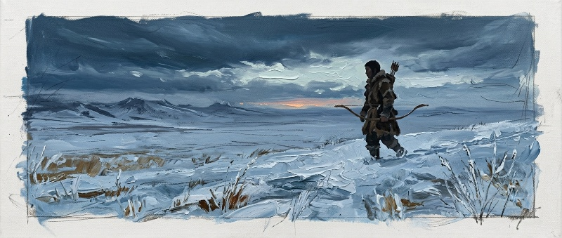
Menurut The Secret History of the Mongols dan tradisi lisan stepa, saat Temujin lahir pada 1162, ia digenggam gumpalan darah sebesar buku jari di tangan kanannya. Dalam kosmologi stepa, tanda fisik semacam ini ditafsirkan para dukun (shaman) sebagai isyarat dari Tengri, Langit Biru Abadi, bahwa bayi itu ditakdirkan menaklukkan darah musuh-musuhnya kelak—sebuah mitos kelahiran yang, betapapun sulit diverifikasi, menjadi bagian tak terpisahkan dari cara stepa memaknai takdir seorang pemimpin sejak lahir.
According to The Secret History of the Mongols and steppe oral tradition, when Temüjin was born in 1162 he clutched a knuckle-sized clot of blood in his right fist. In steppe cosmology, shamans read such physical signs as a message from Tengri, the Eternal Blue Sky, that the child was destined to conquer the blood of his enemies — a birth myth that, however unverifiable, became inseparable from how the steppe understood a leader's fate from the moment of birth.
Dalam The Secret History of the Mongols, dikisahkan bagaimana ibu Temujin diculik dari suami pertamanya oleh Yesugei. Alih-alih meratapi nasib, trauma pengasingan ini membentuk mentalitas Temujin kecil untuk melihat melampaui batas-batas kesukuan darah yang rapuh.
The Secret History of the Mongols recounts how Temüjin's mother was abducted from her first husband by Yesügei. Rather than being crushed by it, the trauma of exile shaped young Temüjin's mind to see past the brittle boundaries of tribal bloodlines.
Temujin muda belajar bahwa kelangsungan hidup di sabana tidak bergantung pada belas kasih klan, melainkan pada pembentukan ikatan persahabatan lintas kelompok (Nökör) yang mendobrak tradisi feodalisme marga lama.
Young Temüjin learned that survival on the grassland depended not on a clan's mercy, but on forging cross-group bonds of personal loyalty (nökör) that broke with the old feudal clan tradition.
Börte, Penculikan Balas Dendam, dan Ikatan Anda yang Kelak RetakBörte, an Abduction of Revenge, and an Anda Bond Later Broken
Di tengah pengasingan itu, Temujin dinikahkan dengan Börte dari suku Onggirat—perjodohan yang telah diatur ayahnya semasa Temujin masih kanak-kanak, sebagaimana lazim di antara klan-klan stepa yang saling menjaga aliansi lewat perkawinan. Namun tak lama setelah pernikahan mereka, suku Merkit menyerang perkemahan sebagai balas dendam atas peristiwa serupa yang menimpa mereka satu generasi sebelumnya—Yesugei sendiri dahulu pernah merebut Hö'elün dari suami pertamanya yang berasal dari suku itu. Börte diculik dan ditahan sebagai istri paksa selama hampir setahun.
During that exile, Temüjin was married to Börte of the Onggirat tribe — a match his father had arranged when Temüjin was still a child, as was customary among steppe clans that secured alliances through marriage. Not long after the wedding, however, the Merkit tribe raided the camp in revenge for an almost identical wrong done to them a generation earlier — Yesügei himself had once seized Hö'elün from her first husband, a Merkit. Börte was abducted and held as a forced wife for nearly a year.
Untuk merebut kembali istrinya, Temujin memohon bantuan dua sekutu penting yang akan membentuk fondasi kekuatan awalnya: Toghrul, Khan suku Kereit yang pernah bersumpah setia kepada Yesugei, dan Jamukha, sahabat masa kecil Temujin yang telah dua kali mengikat sumpah persaudaraan anda dengannya. Gabungan pasukan ketiganya berhasil menghancurkan kubu Merkit dan membebaskan Börte—namun kemenangan itu menyisakan pertanyaan yang tak pernah benar-benar terjawab: anak pertama mereka, Jochi, lahir tak lama setelah pembebasan itu, cukup dekat dengan masa penahanan hingga keabsahan garis keturunannya dipertanyakan sepanjang hidupnya, bahkan oleh adiknya sendiri, Chagatai. Genghis Khan sendiri tak pernah goyah membela Jochi sebagai anak sulungnya secara terbuka—namun bara keraguan itu, seperti akan terlihat pada Bab 2, kelak menjadi salah satu retakan paling menentukan dalam sejarah suksesi kekaisaran.
To win his wife back, Temüjin turned to two crucial allies who would form the foundation of his early power: Toghrul, Khan of the Kereit, who had once sworn loyalty to Yesügei, and Jamukha, Temüjin's childhood friend, with whom he had twice sworn the anda (blood-brother) oath. Their combined forces crushed the Merkit camp and freed Börte — but the victory left a question that was never fully resolved: their first son, Jochi, was born soon after the rescue, close enough to the period of captivity that the legitimacy of his lineage was questioned for the rest of his life, even by his own brother Chagatai. Genghis Khan himself never wavered in publicly defending Jochi as his eldest son — yet that ember of doubt, as we will see in Chapter 2, would become one of the most decisive fault lines in the empire's history of succession.
Ikatan dengan Jamukha yang semula erat justru berubah menjadi rivalitas paling berdarah dalam pembentukan awal kekuasaan Temujin. Setelah bertahun-tahun berkemah dan berburu bersama sebagai anda, perbedaan visi tentang bagaimana kekuasaan semestinya diwariskan—Jamukha condong mempertahankan hierarki kesukuan tradisional, sementara Temujin justru mulai menarik para pengikut lintas-klan yang setia pada dirinya secara personal, bukan pada garis darah—membelah keduanya menjadi musuh. Perang saudara stepa yang panjang ini baru berakhir ketika Jamukha, setelah dikhianati oleh pengikutnya sendiri, diserahkan kepada Temujin dan dieksekusi tanpa pertumpahan darah atas permintaannya sendiri—sebuah penghormatan terakhir dari sahabat yang kini menjadi penguasa tunggal stepa.
The once-close bond with Jamukha turned into the bloodiest rivalry of Temüjin's early rise. After years of camping and hunting together as anda, a diverging vision of how power should be inherited — Jamukha leaned toward preserving the traditional tribal hierarchy, while Temüjin began drawing cross-clan followers loyal to him personally rather than by bloodline — split the two into enemies. This long steppe civil war ended only when Jamukha, betrayed by his own followers, was handed over to Temüjin and executed without bloodshed at his own request — a final gesture of respect from a friend who was now the steppe's sole ruler.
Dari pengalaman pahit inilah lahir prinsip yang kelak menjadi fondasi imperium: kesetiaan pribadi (nökör) mengalahkan garis darah semata. Para pengikut awal Temujin—termasuk Boorchu dan Jelme, dua dari "Empat Anjing" jenderalnya yang legendaris—direkrut bukan dari klan Borjigin, melainkan dari berbagai suku yang pernah menjadi musuh atau orang asing baginya. Struktur inti klan yang terbentuk dari pengalaman pengasingan dan pengkhianatan inilah yang, dua dekade kemudian, menjadi cetak biru bagi meritokrasi absolut yang diproklamasikan di Kurultai 1206.
Out of this bitter experience came the principle that would become the empire's foundation: personal loyalty (nökör) outweighing bloodline alone. Temüjin's earliest followers — including Boorchu and Jelme, two of his legendary "Four Dogs" generals — were recruited not from the Borjigin clan but from tribes that had once been enemies or strangers to him. This core clan structure, forged through exile and betrayal, became the blueprint two decades later for the absolute meritocracy proclaimed at the 1206 Kurultai.
Sumpah Baljuna: Kesetiaan yang Ditepati hingga TakhtaThe Baljuna Covenant: A Loyalty Kept All the Way to the Throne
Dalam masa-masa paling suram sebelum penyatuan stepa tuntas, Temujin dan segelintir pengikut setianya pernah terjebak kelaparan ekstrem di dekat Sungai Baljuna, terpaksa bertahan hidup dengan meminum air berlumpur bercampur darah kuda sembelihan. Di titik terendah itu, Temujin bersumpah bahwa siapa pun yang berbagi kesusahan bersamanya di Baljuna—kelak dikenal sebagai Baljunars—tidak akan pernah dilupakan jasanya. Ia menepati sumpah itu: para Baljunars, tanpa memandang asal suku atau agama, diangkat ke posisi-posisi tertinggi begitu kekaisaran berdiri—bukti nyata bahwa prinsip nökör bukan sekadar retorika politik, melainkan komitmen yang dipegang teguh hingga takhta tertinggi diraih.
During the darkest stretch before the steppe's unification was complete, Temüjin and a handful of loyal followers were trapped in extreme famine near the Baljuna River, forced to survive on muddy water mixed with the blood of a slaughtered horse. At that lowest point, Temüjin swore that whoever shared his hardship at Baljuna — later known as the Baljunars — would never be forgotten. He kept that oath: the Baljunars, regardless of tribal or religious origin, were raised to the highest posts once the empire was founded — solid proof that the nökör principle was never mere political rhetoric, but a commitment honored all the way to the throne.
Catatan sejarah turut mengabadikan kisah lain yang membentuk reputasi Temujin sebagai pelindung jalur dagang: ketika seorang pedagang asing dirampok di wilayah kekuasaannya, ia memerintahkan eksekusi bagi para perampoknya dan mengganti seluruh kerugian sang pedagang dari harta pribadi—demonstrasi awal atas prinsip yang kelak menjadi fondasi keamanan Pax Mongolica (Bab 13): jalur dagang yang begitu aman hingga, menurut legenda yang beredar luas, seseorang bisa berjalan kaki membawa nampan emas dari ujung ke ujung kekaisaran tanpa gangguan.
Historical records preserve another story that cemented Temüjin's reputation as a protector of trade: when a foreign merchant was robbed within his territory, he ordered the robbers executed and personally compensated the merchant's full loss from his own wealth — an early demonstration of the principle that would later underpin the security of the Pax Mongolica (Chapter 13): trade routes so safe that, according to a widely repeated legend, a person could walk a golden tray from one end of the empire to the other unmolested.
Silsilah Keluarga Emas — Hierarki dan Warisan Klan BorjiginThe Golden Lineage — Hierarchy and Inheritance in the Borjigin Clan
Untuk memahami bagaimana imperium seluas benua bisa lahir dari satu keluarga stepa, perlu dipetakan lebih dulu struktur klan yang menopangnya. Genghis Khan dan Börte—istri utamanya sepanjang hidup—memiliki empat putra: Jochi (lahir sekitar 1181, dengan bayang keraguan asal-usul seperti diuraikan di atas), Chagatai (sekitar 1183, yang paling vokal menentang legitimasi Jochi), Ögedei (sekitar 1186, yang kelak dipilih sebagai penerus karena dianggap paling mampu menjembatani rivalitas dua kakaknya), dan Tolui (sekitar 1191, putra bungsu yang menurut adat Mongol mewarisi tanah leluhur dan pasukan inti ayahnya). Selain keempat putra ini, Börte juga melahirkan lima putri—Qojin, Checheikhen, Alakhai Bekhi, Tümelün, dan Al-Altan—yang masing-masing dinikahkan secara strategis dengan penguasa suku-suku taklukan untuk mengikat kesetiaan lewat perkawinan, sebuah praktik yang oleh sejarawan disebut sebagai "kekaisaran anak-menantu."
To understand how a continent-spanning empire could grow from a single steppe family, we first need to map the clan structure that supported it. Genghis Khan and Börte — his principal wife throughout his life — had four sons: Jochi (born around 1181, shadowed by the question of paternity described above), Chagatai (around 1183, the most vocal opponent of Jochi's legitimacy), Ögedei (around 1186, later chosen as successor for his perceived ability to bridge the rivalry between his two elder brothers), and Tolui (around 1191, the youngest son, who by Mongol custom inherited the ancestral homeland and his father's core army). Beyond these four sons, Börte also bore five daughters — Qojin, Checheikhen, Alakhai Bekhi, Tümelün, and Al-Altan — each strategically married to rulers of conquered tribes to bind their loyalty through marriage, a practice historians call the "son-in-law empire."
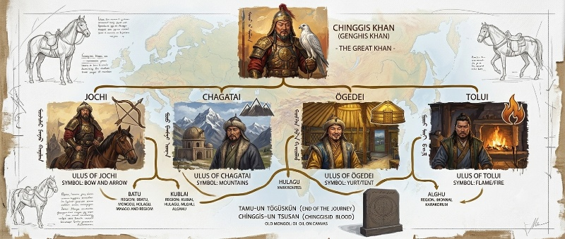
Di luar Börte, Genghis Khan menikahi lebih banyak istri dan selir lain seiring penaklukannya meluas—namun keturunan mereka, betapa pun dihormati, selalu berada di kelas kedua dibanding empat putra Börte. Hierarki inilah yang membentuk Altan Urag ("Keluarga Emas" atau "Garis Keturunan Emas")—prinsip bahwa hanya keturunan langsung Genghis Khan dari klan Borjigin yang berhak menyandang gelar khan di seluruh wilayah kekaisaran, betapa pun jauh cabang keluarga itu berkembang di kemudian hari. Prinsip inilah yang, tiga generasi kemudian, memaksa Timur (Tamerlane)—seperti diuraikan pada Bab 13—menikahi seorang putri Chagataid alih-alih mengklaim gelar khan agung secara langsung.
Beyond Börte, Genghis Khan took further wives and consorts as his conquests widened — but their descendants, however honored, always ranked second to Börte's four sons. This hierarchy formed the Altan Urag ("Golden Family" or "Golden Lineage") — the principle that only Genghis Khan's direct Borjigin descendants could hold the title of khan anywhere in the empire, no matter how far the family tree later branched. It was this very principle that, three generations later, forced Timur (Tamerlane) — as described in Chapter 13 — to marry a Chagataid princess instead of claiming the title of Great Khan outright.
Pembagian ulus: warisan bukan tanah tunggal, melainkan rakyat dan pasukan. Berbeda dari konsep warisan kerajaan di Eropa atau Cina, Genghis Khan membagi kekaisarannya bukan sebagai wilayah geografis tetap, melainkan sebagai ulus—kumpulan rakyat, pasukan, dan hak penggembalaan yang diwariskan kepada masing-masing putra beserta keturunannya. Jochi menerima wilayah paling barat yang baru akan ditaklukkan sepenuhnya oleh putranya Batu (menjadi cikal-bakal Golden Horde); Chagatai menerima jantung Asia Tengah; Ögedei, sebagai anak yang dipilih menjadi khan agung, mewarisi gelar tertinggi sekaligus wilayah di Mongolia timur dan Jin utara; sementara Tolui, sesuai adat otchigin (anak bungsu sebagai "penjaga api"), mewarisi tanah leluhur di jantung Mongolia beserta mayoritas pasukan inti ayahnya—warisan yang kelak menjadi modal politik penting bagi putra-putranya (Möngke, Kublai, Hulegu, dan Ariq Böke) untuk merebut kembali tahta khan agung dari garis Ögedei pascakematian Möngke.
The division of the ulus: an inheritance not of land, but of people and troops. Unlike the inheritance models of Europe or China, Genghis Khan divided his empire not as fixed geographic territory but as ulus — clusters of people, troops, and pasturing rights bequeathed to each son and his descendants. Jochi received the westernmost lands, not yet fully conquered, which his son Batu would later turn into the Golden Horde; Chagatai received the heart of Central Asia; Ögedei, chosen as Great Khan, inherited the highest title along with territory in eastern Mongolia and northern Jin; while Tolui, following the otchigin custom (the youngest son as "keeper of the hearth"), inherited the ancestral homeland at the heart of Mongolia together with the bulk of his father's core army — an inheritance that later became crucial political capital for his sons (Möngke, Kublai, Hulegu, and Ariq Böke) to seize back the Great Khan's throne from Ögedei's line after Möngke's death.
Catatan sejarawan Persia Ata-Malik Juvayni dalam Tarikh-i Jahangushay (Sejarah Sang Penakluk Dunia) menggambarkan keempat putra Genghis Khan dengan watak yang sangat berbeda: Jochi sang pemburu pendiam yang lebih nyaman jauh dari istana; Chagatai yang keras dan legalistik, dijuluki penjaga hukum Yassa; Ögedei yang murah hati namun gemar berpesta hingga berlebihan; dan Tolui yang oleh banyak catatan dianggap prajurit paling piawai di antara mereka, meski tak pernah diberi kesempatan memegang tahta tertinggi.
The Persian historian Ata-Malik Juvayni, in his Tarikh-i Jahangushay (History of the World Conqueror), describes Genghis Khan's four sons as sharply different in temperament: Jochi, the quiet hunter more at ease far from court; Chagatai, harsh and legalistic, nicknamed keeper of the Yassa; Ögedei, generous but given to excessive feasting; and Tolui, whom many accounts regard as the most gifted soldier of them all, though he was never given the chance to hold the highest throne.
Sebuah cerita rakyat yang melekat kuat secara kultural mengisahkan bagaimana Hö'elün, ibu Genghis Khan, meredam pertengkaran anak-anaknya semasa mereka masih remaja: ia memberi masing-masing sebatang anak panah dan menyuruh mematahkannya—yang dengan mudah mereka lakukan satu per satu. Namun ketika kelima batang panah diikat menjadi satu berkas, tak seorang pun mampu mematahkannya. Alegori ini melekat secara budaya sebagai penjelasan filosofis mengapa persatuan di bawah payung Altan Urag menjaga kekuatan kekaisaran, dan mengapa perpecahan—seperti yang akan terjadi pasca-1259 di Bab 8—pada akhirnya meruntuhkannya.
A deeply rooted folk tale tells how Hö'elün, Genghis Khan's mother, quelled her children's quarrels while they were still young: she gave each of them a single arrow and told them to break it — which they each did with ease. But when all five arrows were bundled together, none of them could break the bundle. The allegory has endured as a cultural explanation for why unity under the Altan Urag preserved the empire's strength, and why division — as would happen after 1259, described in Chapter 8 — eventually brought it down.
Di bawah Altan Urag, struktur militer-administratif Mongol tersusun dalam sistem desimal ketat: arban (10 prajurit), zuun (100), mingghan (1.000), dan tümen (10.000)—dengan pengawal istimewa Keshig yang berjumlah 10.000 orang menjaga khan agung secara langsung. Sistem ini sengaja dirancang memotong garis kesukuan lama: seorang prajurit dari klan mana pun bisa naik pangkat murni berdasarkan kecakapan, sementara loyalitasnya dialihkan sepenuhnya kepada komandan barunya dan, pada akhirnya, kepada khan agung sendiri—bukan lagi kepada kepala suku asalnya.
Under the Altan Urag, the Mongol military-administrative structure was organized on a strict decimal system: arban (10 soldiers), zuun (100), mingghan (1,000), and tümen (10,000) — with an elite 10,000-strong Keshig guard protecting the Great Khan directly. The system was deliberately designed to cut across old tribal lines: a soldier from any clan could rise purely on merit, while his loyalty shifted entirely to his new commander and, ultimately, to the Great Khan himself — no longer to his original tribal chief.
Kurultai 1206 dan Lahirnya Mesin Perang UniversalThe 1206 Kurultai and the Birth of a Universal War Machine
Transformasi masif terjadi pada tahun 1206 di sumber Sungai Onon. Melalui sidang agung Kurultai, Temujin dinobatkan sebagai Genghis Khan (Penguasa Samudra/Semesta). Berbeda dengan penguasa lalim pada umumnya, ia menghapuskan sistem kasta kesukuan tradisional dan melembagakan meritokrasi absolut. Jenderal-jenderal brilian seperti Subutai dan Jebe diangkat bukan karena garis keturunan bangsawan, melainkan berdasarkan kecakapan taktis murni di medan laga.
A sweeping transformation took place in 1206 at the source of the Onon River. At a great Kurultai assembly, Temüjin was enthroned as Genghis Khan (Ruler of the Ocean, or of All-Under-Heaven). Unlike most despotic rulers, he abolished the traditional tribal caste system and institutionalized an absolute meritocracy. Brilliant generals such as Subutai and Jebe were appointed not for noble blood, but for pure tactical skill on the battlefield.
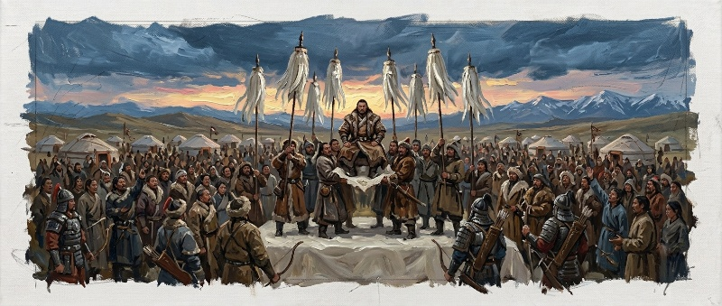
Genghis Khan menetapkan Yassa sebagai undang-undang tertulis pertama imperium. Di bawah hukum ini, para pemimpin spiritual dari berbagai agama—Islam, Kristen Nestorian, Buddha, hingga Taoisme—dibebaskan dari pajak, menciptakan stabilitas ideologis yang belum pernah ada sebelumnya.
Genghis Khan established the Yassa as the empire's first written code of law. Under it, spiritual leaders of every faith — Islam, Nestorian Christianity, Buddhism, and Taoism — were exempted from tax, creating an ideological stability the region had never known.
Sistem pos kilat Yam dibangun melintasi benua. Pesan rahasia dan titah kekaisaran dapat menempuh jarak ribuan kilometer dalam hitungan hari, menjadikan stepa terbuka sebagai jaringan komunikasi tercepat di dunia abad pertengahan.
The Yam relay-post system was built to span the continent. Secret messages and imperial decrees could travel thousands of kilometers within days, turning the open steppe into the fastest communication network of the medieval world.
Kronik Empat Khan Agung — Pergantian dan Pencapaian (1227–1259)Chronicle of Four Great Khans — Succession and Achievement (1227–1259)
Genghis Khan wafat pada Agustus 1227, tak lama setelah menaklukkan Xia Barat—wilayah yang justru membalas dendam dengan cara paling menyakitkan: memusnahkan hampir seluruh jejak arsip dan dokumentasi kerajaan mereka sendiri sebelum benar-benar runtuh, sehingga sejarawan modern harus merekonstruksi banyak detail akhir hayat sang penakluk dari sumber tidak langsung. Sesuai adat, tahta tidak otomatis berpindah ke putra tertua—Tolui, putra bungsu yang mewarisi pasukan inti, menjabat sebagai wali sementara (1227–1229) hingga kurultai berikutnya secara resmi memilih penerus.
Genghis Khan died in August 1227, not long after conquering Western Xia — a kingdom that took its revenge in the most painful way possible: destroying nearly every trace of its own royal archives before it finally collapsed, forcing modern historians to reconstruct many details of the conqueror's final days from indirect sources. By custom, the throne did not pass automatically to the eldest son — Tolui, the youngest son who had inherited the core army, served as interim regent (1227–1229) until the next kurultai formally chose a successor.
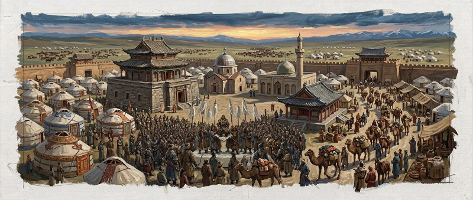
Ögedei Khan (1229–1241): Sang Pembangun Ibu Kota. Terpilih sebagai khan agung kedua, Ögedei mendirikan Karakorum di tepi Sungai Orhon sebagai ibu kota permanen pertama kekaisaran—sebelumnya markas Mongol selalu berpindah mengikuti kemah kekaisaran. Ia menuntaskan apa yang belum sempat diselesaikan ayahnya: menaklukkan sepenuhnya Dinasti Jin di Cina utara pada 1234, sekaligus memperluas kekuasaan hingga Georgia dan dataran Rus, meratakan kota-kota Bulgar dan menembus jauh ke Polandia serta Hongaria. Ia juga meresmikan sistem pemerintahan regional dan perpajakan yang lebih tertata dibanding era ayahnya yang masih berfokus pada penaklukan murni. Namun kegemarannya berpesta dan minum berlebihan berujung fatal: ia wafat pada 11 Desember 1241, kemungkinan akibat stroke yang dipicu pesta minum semalam suntuk—tepat ketika pasukannya berada di ambang menembus jantung Eropa Barat. Berita kematiannya memaksa seluruh jenderal, termasuk Batu Khan yang sudah mengintai Wina, menarik pasukan pulang untuk mengikuti kurultai suksesi—momen yang menyelamatkan Eropa Barat dari nasib yang menimpa Rus dan Eropa Timur.
Ögedei Khan (1229–1241): Builder of the Capital. Chosen as the second Great Khan, Ögedei founded Karakorum on the banks of the Orkhon River as the empire's first permanent capital — until then, the Mongol headquarters had always moved with the imperial camp. He finished what his father had left undone: fully conquering the Jin Dynasty in northern China in 1234, while extending power to Georgia and the Rus lands, razing the Bulgar cities and pushing deep into Poland and Hungary. He also formalized a more organized system of regional government and taxation than his father's era, which had focused almost entirely on conquest. But his taste for feasting and heavy drinking proved fatal: he died on 11 December 1241, likely of a stroke brought on by an all-night drinking bout — right as his forces stood on the brink of breaking into the heart of Western Europe. News of his death forced every general, including Batu Khan, who was already eyeing Vienna, to pull his troops back home for the succession kurultai — the very moment that spared Western Europe the fate that befell Rus' and Eastern Europe.
Kedermawanan Ögedei melahirkan legenda rakyat tersendiri: konon ia begitu kaya hingga pernah memerintahkan emas dan permata ditebar begitu saja di sepanjang jalan Karakorum, semata untuk membuktikan bahwa kekayaan duniawi tak berarti bagi penguasa semesta—sekaligus menguji apakah ada rakyatnya yang tergoda mengambil lebih dari kebutuhan mereka. Namun catatan sejarah tentang pemerintahannya tidak melulu tentang kemurahan hati. Sejarawan mencatat salah satu babak paling kelam masa Ögedei terjadi pada 1237: setelah suku Oirat dianggap gagal menyerahkan jatah perempuan muda yang diwajibkan untuk harem kekaisaran, ia memerintahkan hukuman massal terhadap ribuan gadis Oirat, disaksikan paksa oleh keluarga mereka sendiri—sebuah episode yang oleh sejarawan modern digambarkan sebagai salah satu kekejaman paling mengerikan yang tercatat dari era Mongol, bahkan para penulis kronik sezaman tampak enggan menuliskannya secara gamblang. Menempatkan kedua kisah ini berdampingan—kedermawanan legendaris dan kekejaman yang nyaris tak terucapkan—adalah pengingat bahwa kejayaan sebuah kekaisaran tak pernah lepas dari ongkos kemanusiaan yang ditanggung mereka yang berada di sisi yang kalah.
Ögedei's generosity spawned its own folk legend: he is said to have been so wealthy that he once ordered gold and jewels simply scattered along the road through Karakorum, purely to prove that worldly wealth meant nothing to the ruler of the world — and to see whether any of his subjects would be tempted to take more than they needed. Yet the historical record of his reign is not only about generosity. Historians record one of the darkest episodes of Ögedei's rule in 1237: after the Oirat tribe was deemed to have failed in delivering the required quota of young women for the imperial harem, he ordered a mass punishment of thousands of Oirat girls, forced to be witnessed by their own families — an episode modern historians describe as one of the most horrifying documented atrocities of the Mongol era, one that even contemporary chroniclers seemed reluctant to describe plainly. Placing these two stories side by side — legendary generosity and an almost unspeakable cruelty — is a reminder that an empire's glory was never separate from the human cost borne by those on the losing side.
Interregnum Töregene (1241–1246) dan Güyük Khan (1246–1248): Kurultai yang Ditunda Lima Tahun. Alih-alih segera menggelar kurultai, janda Ögedei, Töregene Khatun, memerintah sebagai wali penuh selama hampir lima tahun, menyingkirkan menteri-menteri lama dan menanam pengaruh bagi putranya sendiri, Güyük. Ketika Güyük akhirnya dinobatkan pada Agustus 1246, penjelajah Fransiskan John of Plano Carpini—diutus Paus Innocent IV untuk membujuk Mongol memeluk Kristen sekaligus menyelidiki niat mereka terhadap Eropa—turut hadir menyaksikan langsung upacara penobatan itu. Catatannya, Historia Mongalorum, menjadi salah satu sumber Barat paling awal dan rinci tentang tata cara istana Mongol, kekuatan militer, serta peringatan tegas kepada Eropa bahwa gelombang invasi berikutnya hanya soal waktu. Namun pemerintahan Güyük berumur sangat pendek: ia wafat pada April 1248, hanya dua tahun setelah penobatan, dalam perjalanan menuju konfrontasi dengan sepupunya sendiri, Batu Khan—perseteruan garis Ögedei melawan garis Jochi yang menjadi pertanda retak lebih dalam yang akan meledak satu generasi kemudian.
Töregene's Interregnum (1241–1246) and Güyük Khan (1246–1248): A Kurultai Delayed Five Years. Rather than convening a kurultai promptly, Ögedei's widow, Töregene Khatun, ruled as full regent for nearly five years, removing the old ministers and building influence for her own son, Güyük. When Güyük was finally enthroned in August 1246, the Franciscan friar John of Plano Carpini — sent by Pope Innocent IV to urge the Mongols toward Christianity and to probe their intentions toward Europe — was present to witness the coronation firsthand. His account, the Historia Mongalorum, became one of the earliest and most detailed Western sources on Mongol court protocol, military strength, and a stark warning to Europe that the next wave of invasion was only a matter of time. But Güyük's reign was extremely short: he died in April 1248, just two years after his coronation, while traveling to confront his own cousin, Batu Khan — a feud between the lines of Ögedei and Jochi that foreshadowed a deeper fracture that would erupt a generation later.
Momen paling tajam dari kunjungan Carpini adalah surat balasan Güyük kepada Paus Innocent IV—dokumen diplomatik yang hingga kini tersimpan di arsip Vatikan. Alih-alih tunduk pada desakan agar bangsa Mongol memeluk Kristen, Güyük justru membalikkan tuntutan itu: ia menuntut Paus sendiri, bersama seluruh penguasa Eropa, datang langsung ke Karakorum untuk sujud dan membayar upeti kepada Sang Khagan, atau mereka akan dianggap musuh kekaisaran. Nada surat yang begitu percaya diri ini turut menyulut mitos yang sudah lama beredar di kalangan istana-istana Eropa abad ke-13: bahwa bangsa Mongol adalah prajurit jelmaan iblis, atau bahkan "pasukan Gog dan Magog" dari nubuat akhir zaman yang datang menghukum dunia Kristen—ketakutan tak berdasar yang baru mulai reda setelah para penjelajah seperti Carpini kembali membawa laporan langsung yang jauh lebih manusiawi tentang tata istana dan kehidupan sehari-hari Mongol.
The sharpest moment of Carpini's visit was Güyük's reply to Pope Innocent IV — a diplomatic document still preserved today in the Vatican archives. Rather than yielding to pressure to convert, Güyük turned the demand around: he insisted the Pope himself, along with every European ruler, come in person to Karakorum to bow and pay tribute to the Khagan, or be treated as enemies of the empire. The letter's supreme confidence fed a myth already circulating in thirteenth-century European courts: that the Mongols were demons incarnate, or even the "armies of Gog and Magog" from end-times prophecy sent to punish Christendom — an unfounded fear that only began to fade once travelers such as Carpini returned with far more human, firsthand accounts of Mongol court life.
Möngke Khan (1251–1259): Sensus, Reformasi, dan Ekspansi Terakhir yang Bersatu. Setelah interregnum kedua di bawah janda Güyük, Oghul Qaimish, kekuasaan akhirnya berpindah dari garis Ögedei ke garis Tolui lewat kudeta istana yang dirancang cermat oleh Sorghaghtani Beki (lihat Bab 9) bagi putra sulungnya. Möngke, yang naik tahta 1 Juli 1251, adalah khan agung terakhir yang benar-benar memerintah kekaisaran bersatu secara efektif. Ia memerintahkan sensus penduduk berskala kekaisaran pertama—upaya administratif paling ambisius sejak zaman Romawi—untuk menghitung dengan presisi jumlah rakyat, ternak, dan potensi pajak di setiap wilayah taklukan. Pada musim gugur 1253, ia mengirim dua saudaranya ke ujung berlawanan kekaisaran: Hulegu ke barat untuk menaklukkan Persia dan Baghdad (lihat Bab 7), dan Kublai ke timur untuk menuntaskan penaklukan Cina Song—dua ekspedisi yang kelak menjadi fondasi dua khanate terpisah setelah kematiannya sendiri di pengepungan Diaoyu, Sichuan, pada 11 Agustus 1259 (lihat Bab 8).
Möngke Khan (1251–1259): Census, Reform, and the Last United Expansion. After a second interregnum under Güyük's widow, Oghul Qaimish, power finally shifted from Ögedei's line to Tolui's through a palace coup carefully engineered by Sorghaghtani Beki (see Chapter 9) for her eldest son. Möngke, enthroned on 1 July 1251, was the last Great Khan to effectively rule a genuinely unified empire. He ordered the empire's first census on an imperial scale — the most ambitious administrative undertaking since Roman times — to precisely count the people, livestock, and tax potential of every conquered territory. In the autumn of 1253, he sent two of his brothers to opposite ends of the empire: Hulegu west to conquer Persia and Baghdad (see Chapter 7), and Kublai east to finish the conquest of Song China — two expeditions that would become the foundations of two separate khanates after his own death at the siege of Diaoyu, Sichuan, on 11 August 1259 (see Chapter 8).
Pada masa Möngke pula datang penjelajah Fransiskan kedua, William of Rubruck, yang tiba di Karakorum awal 1254 atas restu Raja Louis IX dari Prancis. Catatan perjalanannya, Itinerarium, dianggap sejarawan sebagai sumber Barat paling berharga tentang kehidupan sehari-hari istana Mongol—jauh lebih rinci dan personal dibanding laporan diplomatik Carpini. Momen paling terkenal dari kunjungannya adalah Debat Karakorum 1254: atas prakarsa Möngke sendiri, Rubruck diadu berdebat langsung dengan pendeta Buddha, ulama Muslim, dan pendeta Kristen Nestorian di hadapan istana—salah satu debat lintas-agama bertatap muka pertama yang tercatat dalam sejarah dunia antara peradaban Timur dan Barat. Meski Rubruck gagal mengonversi siapa pun, catatannya membuka mata Eropa untuk pertama kalinya bahwa dunia di sebelah timur mereka jauh lebih luas, kompleks, dan majemuk dari yang pernah mereka bayangkan.
It was also during Möngke's reign that a second Franciscan traveler, William of Rubruck, arrived at Karakorum in early 1254 with the blessing of King Louis IX of France. His travel account, the Itinerarium, is regarded by historians as the most valuable Western source on the daily life of the Mongol court — far more detailed and personal than Carpini's diplomatic report. The most famous moment of his visit was the 1254 Karakorum Debate: at Möngke's own initiative, Rubruck was pitted in direct debate against a Buddhist monk, a Muslim scholar, and a Nestorian Christian priest before the court — one of the earliest recorded face-to-face interfaith debates in world history between East and West. Though Rubruck converted no one, his account opened European eyes for the first time to how much vaster, more complex, and more diverse the world to their east truly was.
Dari empat khan agung yang memerintah antara 1206 dan 1259, hanya Genghis Khan dan Möngke yang naik tahta relatif tanpa perebutan kekuasaan berdarah terbuka—dua lainnya, Ögedei dan Güyük, sama-sama melalui interregnum panjang yang diwarnai intrik istana para khatun wali, sebuah pola yang jauh mendahului kekacauan suksesi Dinasti Yuan yang akan diuraikan pada Bab 11.
Of the four Great Khans who ruled between 1206 and 1259, only Genghis Khan and Möngke ascended relatively free of open, bloody power struggles — the other two, Ögedei and Güyük, both came through long interregnums thick with palace intrigue among regent khatuns, a pattern that foreshadowed the succession chaos of the Yuan Dynasty described in Chapter 11.
Catatan sensus era Möngke, meski sebagian besar arsip aslinya kini hilang, dirujuk berulang kali oleh sejarawan Persia generasi berikutnya sebagai bukti bahwa kekaisaran Mongol—jauh dari sekadar mesin perang—juga mengoperasikan salah satu aparat birokrasi pencatatan sipil paling canggih pada masanya, fondasi yang akan diwarisi dan dikembangkan lebih jauh oleh setiap khanate pasca-1259 (lihat Bab 13).
Möngke's census records, though most of the original archives are now lost, were cited repeatedly by later generations of Persian historians as proof that the Mongol empire — far from a mere war machine — also operated one of the most sophisticated civil record-keeping bureaucracies of its time, a foundation each post-1259 khanate would inherit and further develop (see Chapter 13).
Kekuatan Tempur, Logistik, dan Komunikasi — Mesin di Balik Kecepatan MongolFighting Power, Logistics, and Communication — The Engine Behind Mongol Speed
Rahasia sesungguhnya di balik ekspansi tercepat dalam sejarah manusia bukan semata jumlah pasukan—kekuatan inti Genghis Khan hanya berkisar 23.000 penunggang kuda, jumlah yang sebanding dengan pasukan Alexander Agung berabad-abad sebelumnya. Yang membedakan adalah bagaimana pasukan sekecil itu bisa bergerak, menyerang, dan menghilang dengan kecepatan yang tak pernah dibayangkan lawan-lawannya.
The true secret behind the fastest expansion in human history was never sheer numbers — Genghis Khan's core force numbered only around 23,000 horsemen, comparable to Alexander the Great's army centuries earlier. What set it apart was how such a small force could move, strike, and vanish at a speed his enemies never imagined possible.
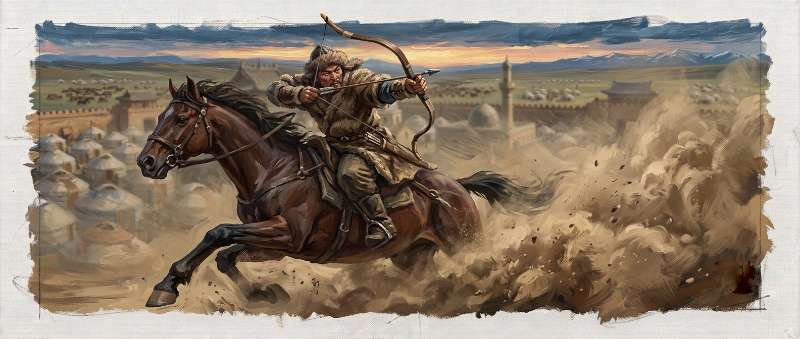
Busur komposit dan disiplin panah kuda. Senjata utama prajurit Mongol adalah busur komposit—laminasi tanduk, kayu, dan otot hewan yang dibentuk sedemikian rupa hingga cukup ringkas untuk ditembakkan dari punggung kuda yang berlari kencang, namun tetap berdaya tembus tinggi. Jangkauannya bisa melampaui 200 meter, dengan tembakan terarah efektif pada 150–175 meter—dua kali lipat jarak busur panjang Inggris yang baru populer satu abad kemudian. Setiap pemanah biasanya membawa dua hingga tiga busur berbeda ukuran serta beberapa tabung anak panah, masing-masing dirancang untuk fungsi berbeda: menembus baju zirah, melukai dengan luka mengerikan, bahkan anak panah bersiul yang sengaja dibuat untuk membuat panik kuda dan pasukan musuh sebelum serangan sungguhan dimulai. Sejak kanak-kanak, setiap anak Mongol dilatih memanah sambil berkuda dalam kegiatan berburu sehari-hari—sehingga saat dewasa, keterampilan yang bagi bangsa lain memerlukan pelatihan militer bertahun-tahun, bagi orang Mongol adalah keterampilan hidup yang sudah mendarah daging sejak balita.
The composite bow and mounted-archery discipline. The primary weapon of the Mongol soldier was the composite bow — laminated horn, wood, and sinew, shaped compact enough to fire from a galloping horse's back while still retaining formidable penetrating power. Its range could exceed 200 meters, with effective aimed fire at 150–175 meters — twice the range of the English longbow that would only become popular a century later. Each archer typically carried two or three bows of different sizes along with several quivers of arrows, each type built for a different purpose: piercing armor, inflicting gruesome wounds, or even whistling arrowheads made specifically to panic enemy horses and troops before the real assault began. From early childhood, every Mongol child was trained to shoot from horseback during everyday hunting — so that by adulthood, a skill that took other peoples years of military training was, for the Mongols, a life skill bred into the bone since toddlerhood.
Taktik pura-pura mundur. Salah satu manuver paling sulit dieksekusi dalam sejarah peperangan—karena kemunduran palsu yang tidak terlatih dengan disiplin ketat bisa berubah menjadi kekalahan sungguhan—justru menjadi andalan pasukan Mongol. Mereka akan berpura-pura kalah dan lari kacau, kadang memperpanjang sandiwara ini hingga berhari-hari atau bahkan sembilan hari penuh, memancing musuh mengejar hingga barisan mereka terpecah dan meregang panjang. Begitu momen itu tiba, kavaleri ringan Mongol berbalik arah, mengepung dari sisi dan belakang, sementara hujan anak panah dari kejauhan melumpuhkan barisan musuh sebelum kavaleri berat menghabisi sisa perlawanan dengan tombak dan pedang jarak dekat. Taktik yang sama—dikenal sebagai "lingkaran perburuan" (nerge)—awalnya dilatih dalam perburuan massal hewan liar di stepa, di mana ribuan penunggang membentuk lingkaran raksasa yang perlahan menyempit, tak membiarkan satu pun mangsa lolos kecuali lewat celah yang sengaja dibuka lalu diburu kembali. Pola ini disalin persis ke medan perang.
The feigned retreat. One of the most difficult maneuvers to execute in the history of warfare — because a false retreat without iron discipline can easily become a genuine rout — became a Mongol specialty. They would pretend to break and flee in disarray, sometimes stretching the ruse over several days or even a full nine days, luring the enemy to give chase until their lines fractured and stretched thin. The moment that happened, Mongol light cavalry wheeled about, encircling from the flanks and rear, while arrow volleys from a distance crippled the enemy line before heavy cavalry finished off the remaining resistance with lance and sword at close range. The same tactic — known as the "hunting circle" (nerge) — was originally trained through mass hunts of wild game on the steppe, where thousands of riders formed a giant circle that slowly closed in, letting no prey escape except through a deliberately opened gap where it was hunted down again. The pattern was copied exactly onto the battlefield.
Logistik: satu prajurit, banyak kuda. Setiap penunggang Mongol biasanya membawa tiga hingga empat ekor kuda cadangan, memungkinkan mereka berganti tunggangan di tengah perjalanan tanpa pernah kehabisan tenaga kuda—sebuah kemewahan logistik yang mustahil ditandingi pasukan menetap mana pun. Rombongan ternak pendukung (domba, kambing) bergerak lebih lambat di belakang pasukan utama, menyediakan susu, daging, dan kulit; para prajurit sesekali kembali ke rombongan ini untuk mengisi ulang perbekalan sebelum melesat maju kembali. Sistem penggembalaan padang rumput dikelola dengan ketat dan bergilir, karena setiap prajurit memahami betul berapa banyak hewan yang bisa ditopang satu wilayah tanpa merusaknya—pengetahuan ekologis yang lahir dari ribuan tahun kehidupan nomaden, bukan sekadar insting perang.
Logistics: one soldier, many horses. Each Mongol rider typically carried three to four remounts, letting him switch horses mid-journey without ever running a single animal into exhaustion — a logistical luxury no settled army could match. Support herds of sheep and goats trailed more slowly behind the main force, providing milk, meat, and hides; soldiers occasionally fell back to these herds to resupply before pushing forward again. Grassland grazing was managed in strict rotation, since every soldier understood precisely how many animals a given territory could support without ruining it — ecological knowledge born of thousands of years of nomadic life, not mere wartime instinct.
Yam: jaringan komunikasi tercepat di dunia abad pertengahan. Seperti disinggung pada Bab 3, sistem pos relai Yam (juga disebut Örtöö) membentang melintasi benua dengan stasiun-stasiun kuda pengganti berjarak teratur. Kurir bisa menempuh ratusan kilometer dalam sehari dengan berganti kuda segar di setiap pos—inilah layanan pos berskala kekaisaran pertama sejak runtuhnya Kekaisaran Romawi. Berkat jaringan ini, titah dari istana bisa mencapai jenderal di ujung benua dalam hitungan hari, bukan bulan, memungkinkan koordinasi strategis lintas front yang mustahil dilakukan kekuatan lain di zamannya.
The Yam: the fastest communication network of the medieval world. As noted in Chapter 3, the Yam relay-post system (also called Örtöö) stretched across the continent with remount stations placed at regular intervals. A courier could cover hundreds of kilometers in a single day by swapping to a fresh horse at every station — the first empire-scale postal service since the fall of the Roman Empire. Thanks to this network, an imperial decree could reach a general at the far edge of the continent within days rather than months, enabling cross-front strategic coordination no other power of the era could match.
Karena setiap prajurit membawa kuda cadangan, pasukan Mongol kerap membiarkan tawanan atau warga sipil menunggangi kuda-kuda ekstra itu dari kejauhan, menciptakan ilusi jumlah pasukan yang jauh lebih besar dari kenyataan. Mereka juga mengikat dahan dan dedaunan di belakang kuda untuk menyeret debu, menciptakan kepulan raksasa di balik bukit yang membuat musuh mengira sedang menghadapi gelombang pasukan tak terhingga—perang psikologis yang sering membuat kota-kota menyerah bahkan sebelum pertempuran dimulai.
Because every soldier carried remount horses, Mongol forces would often let captives or civilians ride those extra horses at a distance, creating the illusion of a force far larger than reality. They also tied branches and leaves behind the horses to drag up dust, raising giant clouds behind hills that convinced the enemy they faced an endless tide of troops — a psychological warfare that often made cities surrender before a single battle was fought.
Untuk kelemahan yang mereka sendiri tak kuasai—perang pengepungan kota berbenteng—orang Mongol dengan pragmatis merekrut insinyur Cina dan Timur Tengah yang ahli membangun trebuchet berpengimbang beban (counterweight trebuchet) dan mesin pelontar lainnya. Kemampuan menyerap keahlian musuh yang dikalahkan, alih-alih menghancurkannya, menjadi salah satu kunci mengapa tembok kota yang dulu dianggap tak tertembus akhirnya runtuh satu demi satu.
For the one weakness they had not mastered themselves — siege warfare against walled cities — the Mongols pragmatically recruited Chinese and Middle Eastern engineers skilled in building counterweight trebuchets and other siege engines. This capacity to absorb a defeated enemy's expertise, rather than simply destroy it, was one of the keys to why walls once thought impregnable fell, one by one.
Warisan yang Disebar — Sumbangan Mongol pada Peradaban DuniaA Legacy Scattered Wide — The Mongol Contribution to World Civilization
Ironi terbesar dari mesin perang paling mematikan di zamannya adalah betapa besar sumbangannya justru pada kemajuan peradaban yang ia taklukkan. Dengan menyatukan hampir seluruh daratan Eurasia dalam satu payung keamanan tunggal—Pax Mongolica—Mongol menjadi perantara pertukaran teknologi dan pengetahuan berskala benua yang belum pernah terjadi sejak runtuhnya jaringan perdagangan kuno.
The greatest irony of the deadliest war machine of its age is how much it ended up contributing to the advancement of the very civilizations it conquered. By uniting nearly the entire Eurasian landmass under a single security umbrella — the Pax Mongolica — the Mongols became brokers of a continent-scale exchange of technology and knowledge unseen since the collapse of the ancient trade networks.
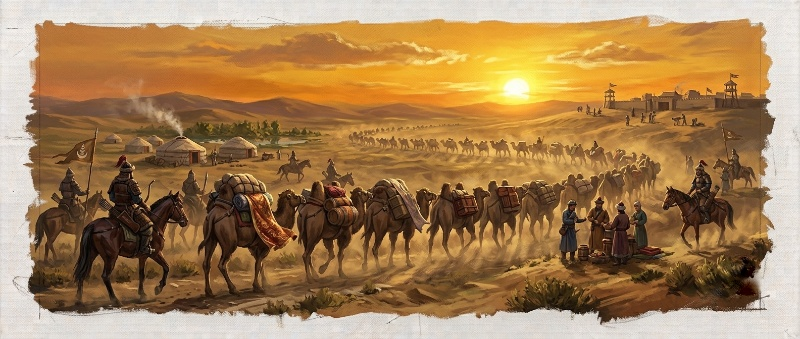
Bubuk mesiu dan revolusi persenjataan. Teknologi bubuk mesiu yang lahir di Cina menyebar ke dunia Islam dan kemudian Eropa justru lewat jalur yang dibuka dan diamankan pasukan Mongol sendiri—ironisnya, senjata yang kelak akan menjadi alat yang menandai berakhirnya era supremasi kavaleri stepa. Tanpa perantaraan Mongol, sejarawan modern menilai teknologi ini kemungkinan besar tidak akan menyeberang benua secepat itu; para penjelajah Eropa yang sering dikreditkan "menemukan" teknologi Cina sesungguhnya hanya memetik apa yang telah lebih dulu diantarkan oleh jaringan Mongol ke depan pintu mereka.
Gunpowder and a revolution in weaponry. Gunpowder technology, born in China, spread to the Islamic world and then to Europe along routes opened and secured by Mongol forces themselves — ironically, a weapon that would eventually help end the era of steppe-cavalry supremacy. Without Mongol intermediation, modern historians judge it unlikely the technology would have crossed continents so quickly; the European explorers often credited with "discovering" Chinese technology were, in truth, merely picking up what the Mongol network had already delivered to their doorstep.
Percetakan dan uang kertas. Teknik cetak Cina merambat ke barat melalui jalur yang sama, sementara konsep uang kertas—yang di Cina disebut chao dan telah digunakan sebagai sistem ekonomi bersama pertama di dunia di bawah Dinasti Yuan—diperkenalkan ke Ilkhanate Persia dan turut membentuk cara pandang baru tentang nilai serta kepercayaan finansial yang kelak memengaruhi para bankir Italia dan Belanda.
Printing and paper money. Chinese printing techniques crept westward along the same routes, while the concept of paper currency — called chao in China, and used as the world's first shared economic system under the Yuan Dynasty — was introduced to the Persian Ilkhanate and helped shape a new way of thinking about value and financial trust that would later influence Italian and Dutch bankers.
Sains dan astronomi lintas peradaban. Seperti diuraikan pada Bab 12, Observatorium Maragheh menjadi ruang pertemuan astronom Persia, Arab, dan Cina yang saling bertukar tabel perhitungan dan model matematis. Pengetahuan medis Islam diterjemahkan ke bahasa Cina dan diintegrasikan ke pengobatan era Yuan; sebaliknya, teknik kertas dan percetakan Cina memperkuat tradisi keilmuan di dunia Islam.
Science and astronomy across civilizations. As described in Chapter 12, the Maragheh Observatory became a meeting place for Persian, Arab, and Chinese astronomers who exchanged calculation tables and mathematical models. Islamic medical knowledge was translated into Chinese and integrated into Yuan-era medicine; in turn, Chinese papermaking and printing techniques strengthened the scholarly tradition of the Islamic world.
Jalur Sutra yang hidup kembali. Mongol tidak sekadar membiarkan jalur dagang berjalan—mereka aktif menurunkan tarif lintas-Asia dibanding dinasti-dinasti sebelumnya, memelihara karavanserai, dan memastikan keamanan jalur dengan jaringan Yam yang sama yang digunakan untuk keperluan militer. Kota-kota seperti Samarkand dan Bukhara berkembang pesat sebagai pusat dagang; sutra dan porselen Cina mengalir ke barat, sementara rempah dari Kepulauan Rempah, kain katun India, dan permadani Persia mengalir ke timur—memperkenalkan cita rasa dan komoditas baru yang mengubah pola konsumsi lintas benua.
The Silk Road, revived. The Mongols did not merely allow trade routes to function — they actively lowered cross-Asian tariffs compared to previous dynasties, maintained caravanserais, and secured the routes using the same Yam network built for military purposes. Cities such as Samarkand and Bukhara flourished as trading hubs; Chinese silk and porcelain flowed west, while spices from the Spice Islands, Indian cotton cloth, and Persian carpets flowed east — introducing new tastes and commodities that reshaped consumption patterns across continents.
Seni, arsitektur, dan sastra sinkretis. Di istana Yuan, gaya lukis Persia dan Asia Tengah berbaur dengan teknik lukis tradisional Cina; kaligrafi dan iluminasi manuskrip berkembang dengan pengaruh tiga tradisi sekaligus. Di Ilkhanate, arsitektur makam dan masjid memadukan motif Persia, Mongol, dan Cina dalam satu bahasa visual baru. Karya sastra pada masa ini kerap menenun tema pertemuan budaya—kisah dan cerita rakyat Persia serta Turkik menyusup ke dalam tradisi sastra yang sebelumnya terpisah rapi oleh batas peradaban.
Syncretic art, architecture, and literature. At the Yuan court, Persian and Central Asian painting styles blended with traditional Chinese technique; calligraphy and manuscript illumination flourished under the influence of three traditions at once. In the Ilkhanate, tomb and mosque architecture fused Persian, Mongol, and Chinese motifs into a new shared visual language. Literary works of the era often wove together themes of cultural encounter — Persian and Turkic tales and folklore slipped into literary traditions that had once been neatly separated by civilizational boundaries.
Beberapa sejarawan mencatat bahwa kompas magnetik Cina yang diadopsi lewat jalur perdagangan yang diamankan Mongol sampai ke Eropa tepat menjelang era penjelajahan samudra—seakan sejarah menyiapkan alat sebelum manusia siap menggunakannya untuk membuka dunia baru.
Some historians note that the Chinese magnetic compass, adopted along trade routes secured by the Mongols, reached Europe right before the age of oceanic exploration began — as if history had prepared the tool just before humanity was ready to use it to open a new world.
Jaringan pertukaran yang sama yang membawa sutra, rempah, dan ilmu pengetahuan lintas benua, pada akhirnya juga menjadi jalan raya bagi Maut Hitam untuk merambat dari Asia ke Eropa pada pertengahan abad ke-14 (lihat Bab 13)—pengingat pahit bahwa konektivitas global, sejak awal kelahirannya, selalu membawa berkah dan bencana dalam satu paket yang sama.
The very same exchange network that carried silk, spices, and knowledge across continents ultimately became the highway along which the Black Death spread from Asia to Europe in the mid-fourteenth century (see Chapter 13) — a bitter reminder that global connectivity, since its very birth, has always carried blessing and catastrophe in the same package.
Gelombang Ekspansi: Dari Baghdad hingga Laut JawaWaves of Expansion: From Baghdad to the Java Sea
Balas Dendam yang Berlebihan: Invasi Khwarezmia dan Ongkos Kemanusiaan (1219–1221)Revenge Without Limit: The Khwarezmian Invasion and Its Human Cost (1219–1221)
Jauh sebelum Hulegu meruntuhkan Baghdad, gelombang ekspansi paling menentukan justru dipimpin Genghis Khan sendiri—dan dipicu oleh pengkhianatan terhadap prinsip yang paling ia junjung tinggi: keamanan jalur dagang (lihat Bab 1). Pada 1218, gubernur kota Otrar di Kekaisaran Khwarezmia memerintahkan eksekusi terhadap rombongan karavan dagang yang dikirim Genghis Khan, menuduh mereka sebagai mata-mata. Ketika Genghis mengirim utusan damai menuntut penjelasan, Shah Muhammad II justru mengeksekusi sebagian utusan itu pula dan mencukur kepala sisanya sebagai penghinaan—pelanggaran ganda terhadap kekebalan diplomatik dan keamanan dagang yang tak bisa dimaafkan.
Long before Hulegu brought down Baghdad, the most decisive wave of expansion was led by Genghis Khan himself — triggered by a betrayal of the very principle he held most sacred: the safety of trade routes (see Chapter 1). In 1218, the governor of the city of Otrar in the Khwarezmian Empire ordered the execution of a trade caravan sent by Genghis Khan, accusing them of being spies. When Genghis sent envoys demanding an explanation, Shah Muhammad II executed some of them as well and shaved the heads of the rest as an insult — a double violation of diplomatic immunity and trade security that could not be forgiven.
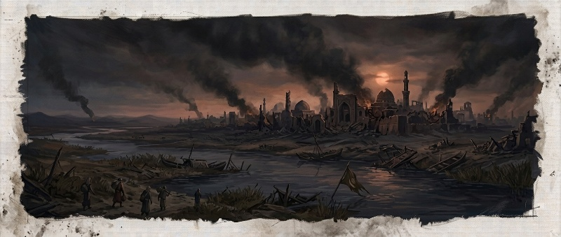
Balasan yang menyusul menjadi salah satu kampanye paling mematikan dalam sejarah manusia. Antara 1219 dan 1221, kota demi kota di Transoxiana dan Khorasan—Otrar, Bukhara, Samarkand, Urgench—jatuh satu demi satu. Di Merv, pasukan di bawah Tolui dilaporkan sejarawan kontemporer seperti Ibn al-Atsir menewaskan penduduk dalam jumlah yang diperdebatkan berkisar 700.000 hingga lebih dari satu juta jiwa, sementara di Nishapur, populasi yang tersisa—diperkirakan sekitar 170.000 orang—nyaris musnah total sebagai balas dendam atas kematian menantu Genghis Khan dalam pertempuran sebelumnya; bahkan hewan peliharaan kota dilaporkan turut dimusnahkan sesuai perintah agar "tak ada yang bernapas tersisa." Angka-angka ini, meski diperdebatkan keakuratannya oleh sejarawan modern mengingat kecenderungan penulis sezaman melebih-lebihkan demi efek propaganda ketakutan, tetap menjadi salah satu episode kekerasan massal paling terdokumentasi pada masanya—pengingat bahwa kejayaan logistik dan taktik yang diuraikan pada Bab 5 selalu berjalan seiring ongkos kemanusiaan yang nyata bagi mereka yang berada di jalur penaklukan.
The retaliation that followed became one of the deadliest campaigns in human history. Between 1219 and 1221, city after city in Transoxiana and Khorasan — Otrar, Bukhara, Samarkand, Urgench — fell one by one. At Merv, forces under Tolui were reported by contemporary historians such as Ibn al-Athir to have killed a disputed number of inhabitants ranging from 700,000 to over a million, while at Nishapur, the surviving population — estimated at around 170,000 — was nearly wiped out entirely in revenge for the death of Genghis Khan's son-in-law in an earlier battle; even the city's animals were reportedly destroyed on orders that "nothing that breathed" should remain. These figures, though disputed by modern historians given contemporary chroniclers' tendency to exaggerate for the sake of psychological terror, remain among the most heavily documented episodes of mass violence of their time — a reminder that the logistical and tactical triumphs described in Chapter 5 always walked hand in hand with a very real human cost for those in the path of conquest.
Setelah wafatnya sang penakluk pada 1227, makam rahasianya disembunyikan secara mutlak di Pegunungan Khentii (Burkhan Khaldun)—di mana para pengawal saling membunuh demi menjaga keabadian Ikh Khorig (Tabu Agung). Cerita rakyat Mongol menambahkan bumbu mistis pada misteri ini: sebagian versi legenda menyebutkan bumi sendiri "menelan" tandu jenazahnya atas kehendak langit, sementara versi lain mencatat ribuan kuda sengaja digiring berlari berulang kali di atas tanah pemakaman hingga rata dengan padang rumput sekitarnya—memastikan tak ada jejak fisik tersisa agar arwah sang penakluk beristirahat tanpa gangguan manusia selamanya. Warisan penaklukan ini dilanjutkan oleh para pewarisnya dengan skala destruksi dan integrasi yang mencengangkan. Pada tahun 1258, Hulegu Khan (cucu Genghis Khan) meruntuhkan Baghdad, mengakhiri Kekhalifahan Abbasiyah.
After the conqueror's death in 1227, his secret tomb was hidden absolutely in the Khentii Mountains (Burkhan Khaldun) — where the burial guards reportedly killed one another to preserve the sanctity of the Ikh Khorig (Great Taboo) forever. Mongol folklore adds a mystical layer to the mystery: some versions of the legend say the earth itself "swallowed" his funeral bier by heaven's will, while others record that thousands of horses were deliberately driven back and forth over the burial ground until it was leveled flat with the surrounding grassland — ensuring no physical trace remained, so the conqueror's spirit could rest undisturbed by human hands forever. This legacy of conquest was carried forward by his heirs at a staggering scale of both destruction and integration. In 1258, Hulegu Khan (Genghis Khan's grandson) brought down Baghdad, ending the Abbasid Caliphate.
Saat Baghdad jatuh, perpustakaan agung dibumihanguskan. Konon, air Sungai Tigris berubah menjadi hitam pekat karena lunturnya jutaan naskah sains dan filsafat yang dibuang ke dalam air, serta merah darah para cendekiawan yang dibantai—dengan taksiran korban jiwa yang oleh sebagian sejarawan diperkirakan mencapai ratusan ribu dalam kurun waktu kurang dari seminggu.
When Baghdad fell, its great library was burned to the ground. Legend holds that the waters of the Tigris turned pitch black from the dissolving ink of millions of scientific and philosophical manuscripts thrown into the river, and red with the blood of the scholars massacred beside it — with a death toll some historians estimate reached the hundreds of thousands in under a week.
Dalam tradisi lisan Timur Tengah pascapenaklukan, berkembang mitos bahwa darah para ulama dan filsuf yang dibuang ke Tigris menarik kutukan abadi atas garis keturunan Hulegu sendiri. Konon, kutukan itulah yang menjelaskan mengapa para penerus Ilkhanate dilanda pertumpahan darah internal tiada henti dan kematian-kematian muda yang misterius, hingga dinasti itu punah mendadak tanpa pewaris sah pada 1335 (Bab 12)—sebuah penjelasan mistis rakyat atas apa yang oleh sejarawan modern lebih dilihat sebagai pola berulang krisis suksesi Mongol yang telah tampak sejak Bab 4 dan Bab 8.
In Middle Eastern oral tradition after the conquest, a myth grew that the blood of the scholars and philosophers cast into the Tigris drew an eternal curse upon Hulegu's own lineage. That curse, so the story goes, explains why the Ilkhanate's successors were plagued by ceaseless internal bloodshed and mysterious early deaths, until the dynasty suddenly died out without a legitimate heir in 1335 (Chapter 12) — a folk-mystical explanation for what modern historians see instead as a recurring pattern of Mongol succession crises already visible since Chapter 4 and Chapter 8.
Ambisi global Mongol merambah wilayah maritim ketika Kublai Khan, pendiri Dinasti Yuan, mengirim ribuan armada laut ke Nusantara untuk menghukum Raja Kertanegara dari Singasari. Namun, pasukan Mongol terjebak dalam perang gerilya yang dirancang oleh Raden Wijaya di lebatnya hutan tropis Jawa, memaksa mereka mundur dalam kekalahan memalukan.
Mongol global ambition reached into maritime territory when Kublai Khan, founder of the Yuan Dynasty, sent a fleet of thousands of ships to the archipelago to punish King Kertanegara of Singhasari. But the Mongol force was drawn into a guerrilla war engineered by Raden Wijaya deep in the tropical forests of Java, forcing them into a humiliating retreat.
1259–1294 — Empat Pecahan Semesta1259–1294 — Four Fractured Realms
Retak pertama muncul bukan di medan perang, melainkan di ranjang kematian. Pada 1259, Möngke Khan—cucu Genghis Khan dan khan agung keempat—tewas dalam pengepungan Benteng Diaoyu di Sichuan, saat menyerang Dinasti Song Selatan, tanpa sempat menunjuk penerus. Kekosongan itu memicu perang saudara yang akan membelah imperium yang tampak tak terkalahkan menjadi empat serpihan yang tak pernah bersatu kembali.
The first crack did not appear on a battlefield, but at a deathbed. In 1259, Möngke Khan — Genghis Khan's grandson and the fourth Great Khan — died during the siege of Diaoyu Fortress in Sichuan, while attacking the Southern Song Dynasty, without naming a successor. That vacuum triggered a civil war that would split the seemingly unbeatable empire into four fragments that would never again reunite.
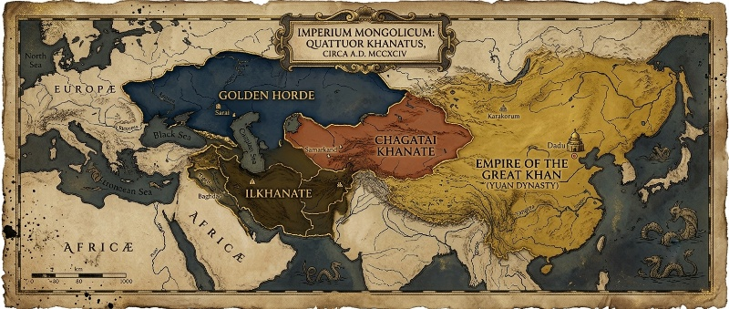
Dua adik Möngke, Kublai dan Ariq Böke, sama-sama mengklaim tahta khan agung, memicu Perang Saudara Toluid (1260–1264)—dinamai dari garis Tolui, ayah mereka. Kublai, yang saat itu memimpin kampanye di Cina utara, mendeklarasikan dirinya khan di Kaiping pada musim semi 1260; Ariq Böke, yang lebih dekat dengan basis tradisional di Karakorum, dinobatkan oleh kurultai yang lebih "sah" secara adat beberapa minggu kemudian. Kublai menang pada 1264, tetapi kemenangan itu tak pernah dipulihkan menjadi otoritas tunggal atas seluruh stepa—sebagian besar khanate barat tidak lagi mengakui klaimnya secara penuh.
Möngke's two younger brothers, Kublai and Ariq Böke, both claimed the Great Khan's throne, triggering the Toluid Civil War (1260–1264) — named for their father Tolui's line. Kublai, then leading a campaign in northern China, declared himself khan at Kaiping in the spring of 1260; Ariq Böke, closer to the traditional power base at Karakorum, was enthroned by a more customarily "legitimate" kurultai a few weeks later. Kublai won in 1264, but the victory was never restored into sole authority over the whole steppe — most of the western khanates no longer fully recognized his claim.
Intersection historis yang menentukan: 3 September 1260, Ain Jalut. Persis di tengah kekosongan kekuasaan itu, Hulegu Khan—yang baru meruntuhkan Baghdad (1258) dan Damaskus—terpaksa menarik sebagian besar pasukannya kembali ke timur untuk mengikuti kurultai suksesi, menyisakan hanya sekitar 10.000 prajurit di bawah jenderal Kitbuqa di Suriah. Kekosongan inilah yang dimanfaatkan Sultan Mamluk Qutuz dan panglimanya Baybars: di dekat mata air Ain Jalut, Galilea, pasukan Mamluk mengalahkan sisa pasukan Mongol dalam pertempuran terbuka pertama yang benar-benar menghentikan laju ekspansi mereka ke arah Mesir dan Afrika Utara. Kitbuqa tewas di medan laga. Tanpa krisis suksesi di Mongolia, sejarawan banyak yang menilai pasukan penuh Hulegu kemungkinan besar akan menembus Kairo.
A decisive historical intersection: 3 September 1260, Ain Jalut. Precisely amid that power vacuum, Hulegu Khan — who had just brought down Baghdad (1258) and Damascus — was forced to withdraw most of his forces back east for the succession kurultai, leaving only about 10,000 soldiers under general Kitbuqa in Syria. It was this vacuum that Mamluk Sultan Qutuz and his commander Baybars exploited: near the spring of Ain Jalut in Galilee, Mamluk forces defeated the remaining Mongol army in the first open battle that truly halted their expansion toward Egypt and North Africa. Kitbuqa died on the field. Without the succession crisis in Mongolia, many historians judge that Hulegu's full army would very likely have broken through to Cairo.
Kekalahan di Ain Jalut kian diperparah oleh pengkhianatan dari dalam keluarga sendiri. Berke Khan, penguasa Golden Horde yang telah memeluk Islam sejak 1240-an, murka menyaksikan sepupunya Hulegu membumihanguskan Baghdad dan mengeksekusi Khalifah Abbasiyah terakhir. Berke diam-diam menjalin pakta dengan Mamluk—musuh sesama Mongol yang justru satu iman dengannya—dan menyeret Golden Horde ke dalam Perang Berke–Hulegu (1262–1264), pertempuran saudara pertama berskala penuh antar-cabang keluarga Genghis Khan. Pasukan Hulegu dipukul mundur di Kaukasus Utara pada 1263. Hulegu wafat pada 1265, disusul Berke setahun kemudian—dua pendiri khanate yang saling bermusuhan mati hampir bersamaan tanpa pernah berdamai.
The defeat at Ain Jalut was compounded by betrayal from within the family itself. Berke Khan, ruler of the Golden Horde, who had embraced Islam since the 1240s, was enraged to see his cousin Hulegu raze Baghdad and execute the last Abbasid Caliph. Berke secretly forged a pact with the Mamluks — a fellow Mongol's enemy, yet a co-religionist — dragging the Golden Horde into the Berke–Hulegu War (1262–1264), the first full-scale fratricidal war between branches of Genghis Khan's family. Hulegu's forces were driven back in the North Caucasus in 1263. Hulegu died in 1265, followed by Berke a year later — two rival khanate founders dying almost simultaneously, having never made peace.
Retakan berlanjut ke front lain: Perang Kaidu–Kublai (1268–1301), ketika Kaidu—pemimpin de facto rumpun Ögedei yang menguasai Khanate Chagatai—menolak mengakui Kublai dan melancarkan perang gerilya stepa selama lebih dari tiga dekade, bahkan sempat menyerbu Karakorum sendiri pada 1298. Chagatai Khanate juga merambah ke selatan, melancarkan gelombang penyerbuan ke Kesultanan Delhi pada akhir 1290-an hingga awal 1300-an di bawah Khan Duwa—memaksa Sultan Alauddin Khalji membangun benteng pertahanan permanen di sekitar Delhi untuk menahan laju kavaleri Mongol dari utara, sebuah babak yang jarang disebut dalam narasi Mongol-sentris namun mengguncang anak benua India selama satu generasi.
The fracture spread to yet another front: the Kaidu–Kublai War (1268–1301), when Kaidu — de facto leader of the Ögedeid line who controlled the Chagatai Khanate — refused to recognize Kublai and waged a steppe guerrilla war for more than three decades, even raiding Karakorum itself in 1298. The Chagatai Khanate also pushed south, launching waves of raids into the Delhi Sultanate in the late 1290s through the early 1300s under Khan Duwa — forcing Sultan Alauddin Khalji to build permanent defensive fortifications around Delhi to hold back the Mongol cavalry from the north, an episode rarely mentioned in Mongol-centric narratives yet one that shook the Indian subcontinent for a generation.
Pada saat Kublai wafat tahun 1294, retakan-retakan ini telah mengeras menjadi empat entitas otonom yang saling terpisah geografis maupun politik:
By the time Kublai died in 1294, these fractures had hardened into four autonomous entities, separated both geographically and politically:
(barat laut) — stepa Rusia dan Eropa Timur, garis keturunan Batu Khan (putra Jochi).
(northwest) — the Russian steppe and Eastern Europe, the lineage of Batu Khan (Jochi's son).
(tengah) — jantung Asia Tengah, garis keturunan Chagatai Khan.
(center) — the heart of Central Asia, the lineage of Chagatai Khan.
(barat daya) — Persia hingga Mediterania, garis keturunan Hulegu Khan.
(southwest) — from Persia to the Mediterranean, the lineage of Hulegu Khan.
(timur) — Cina, garis keturunan Kublai Khan, yang tetap menyandang gelar simbolis khan agung meski otoritas riilnya hanya berlaku di wilayahnya sendiri.
(east) — China, the lineage of Kublai Khan, who retained the symbolic title of Great Khan even though his real authority applied only within his own realm.
Sempat ada jeda rekonsiliasi: setelah kematian Kaidu, pada 1304 tiga khanate barat berdamai dan kembali mengakui Temür Khan (penerus Kublai) sebagai khan agung secara seremonial—namun pengakuan itu tak lagi berarti komando militer atau administratif yang nyata. Keempat serpihan itu telah, dalam segala hal yang substansial, menjadi dunia masing-masing.
There was a brief moment of reconciliation: after Kaidu's death, in 1304 the three western khanates made peace and again recognized Temür Khan (Kublai's successor) as Great Khan in ceremonial terms — but that recognition no longer carried real military or administrative command. In every substantive sense, the four fragments had already become worlds of their own.
Dalam salah satu ironi paling ganjil abad pertengahan, Golden Horde—yang bermusuhan dengan Ilkhanate—tetap menjadi pemasok utama budak-prajurit Kipchak/Turkik ke Mesir, bahan baku manusia yang justru direkrut menjadi tentara Mamluk yang berulang kali mengalahkan Ilkhanate, sesama cabang keluarga Mongol. Perdagangan dan permusuhan berjalan berdampingan tanpa kontradiksi yang dirasakan aneh oleh para pelakunya sendiri.
In one of the strangest ironies of the Middle Ages, the Golden Horde — an enemy of the Ilkhanate — remained the chief supplier of Kipchak/Turkic slave-soldiers to Egypt, human raw material recruited straight into the Mamluk army that repeatedly defeated the Ilkhanate, its own fellow Mongol branch. Trade and enmity ran side by side without those involved ever seeming to feel the contradiction.
Satu generasi setelah Ain Jalut, Ilkhan Ghazan—yang baru memeluk Islam pada 1295—nyaris membalikkan keadaan dengan mengalahkan Mamluk di Wadi al-Khaznadar, Suriah, pada Desember 1299. Namun kemenangan itu tak pernah berhasil dipertahankan; pasukan Ilkhanate mundur dalam hitungan bulan, menutup babak panjang perebutan Suriah antara dua kekuatan Muslim yang sama-sama mengklaim warisan kekuasaan yang berbeda asal-usulnya.
A generation after Ain Jalut, Ilkhan Ghazan — who had converted to Islam in 1295 — very nearly reversed the outcome by defeating the Mamluks at Wadi al-Khazandar, Syria, in December 1299. But the victory was never held; Ilkhanate forces withdrew within months, closing a long chapter of struggle over Syria between two Muslim powers each claiming a very different lineage of power.
Khatun — Perempuan yang Menggerakkan Tahta SemestaKhatun — The Women Who Moved the Throne of the World
Sejarah kekaisaran Mongol sering ditulis sebagai riwayat laki-laki berkuda dan berpedang. Namun di balik tenda-tenda putih ordo kekaisaran, kekuasaan sesungguhnya kerap dipegang oleh para khatun—istri, ibu, dan janda para khan—yang mengelola ekonomi, diplomasi, dan bahkan suksesi tahta. Sejarawan mencatat bahwa antara tahun 1100 dan 1300, lebih dari sepuluh perempuan Mongol memegang kekuasaan politik signifikan, jauh melampaui jumlah setara di Eropa pada periode yang sama—sebuah anomali yang berakar pada struktur poligami dan hak waris ordo milik pribadi para khatun.
The history of the Mongol empire is often written as a chronicle of men on horseback wielding swords. But behind the white tents of the imperial ordu, real power was frequently held by khatuns — the wives, mothers, and widows of khans — who managed the economy, diplomacy, and even the succession itself. Historians note that between 1100 and 1300, more than ten Mongol women held significant political power, far more than the equivalent number in Europe over the same period — an anomaly rooted in the empire's polygamous structure and the personal inheritance rights held by each khatun's own ordu.
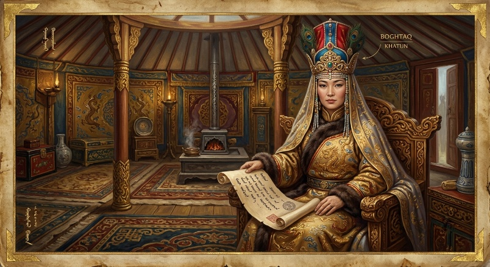
Setelah kematian Ögedei Khan pada 1241, Töregene Khatun mengambil alih tampuk kekuasaan sebagai wali penuh selama lima tahun, mengganti para menteri mendiang suaminya dengan orang-orang kepercayaannya sendiri, termasuk penasihat perempuan bernama Fatima. Di sisi lain kekaisaran, Sorghaghtani Beki—istri Tolui dan ibu dari Möngke serta Kublai Khan—dikenang sebagai figur yang begitu piawai secara diplomatik hingga dijuluki "Ibu Kekaisaran." Ia mengelola wilayah Hebei di Cina utara dengan toleransi beragama yang tinggi, mendidik keempat putranya dalam berbagai bahasa dan tradisi, tiga di antaranya kelak menjadi khan agung.
After Ögedei Khan's death in 1241, Töregene Khatun seized full power as regent for five years, replacing her late husband's ministers with her own trusted circle, including a female advisor named Fatima. Elsewhere in the empire, Sorghaghtani Beki — Tolui's wife and mother of Möngke and Kublai Khan — is remembered as a figure so diplomatically skilled she earned the title "Mother of Empire." She governed the Hebei region of northern China with notable religious tolerance, and educated all four of her sons in multiple languages and traditions, three of whom would go on to become Great Khan.
Masa jeda antara wafatnya seorang khan dan terpilihnya penggantinya di Kurultai berikutnya disebut interregnum. Para lelaki menganggap perempuan sebagai wali sementara yang "aman" karena dianggap tidak akan merebut takhta untuk diri sendiri—sebuah asumsi yang justru memberi mereka ruang bertahun-tahun untuk membentuk kebijakan, membangun aliansi, dan menyingkirkan rival politik.
The gap between a khan's death and his successor's election at the next kurultai is called an interregnum. Men regarded women as "safe" temporary regents, assumed unlikely to seize the throne for themselves — an assumption that ironically gave them years of room to shape policy, build alliances, and remove political rivals.
Ironisnya, hampir semua khatun berpengaruh ini bukan perempuan Mongol asli, melainkan perempuan dari suku stepa yang ditaklukkan atau dinikahi lewat aliansi—banyak di antaranya penganut Kristen Nestorian. Dalam dunia Mongol, gender dan agama tidak menjadi penghalang menuju kekuasaan, selama loyalitas dan kecakapan terbukti.
Ironically, almost all of these influential khatuns were not ethnic Mongols at all, but women from steppe tribes either conquered or married in through alliance — many of them Nestorian Christians. In the Mongol world, gender and religion were never a barrier to power, so long as loyalty and competence had been proven.
Golden Horde dan Rusia yang Lahir dari Bayang-Bayang YokeThe Golden Horde and a Russia Born from the Yoke's Shadow
Ketika Batu Khan, cucu Genghis Khan, mendirikan Golden Horde di stepa selatan Rusia pada pertengahan abad ke-13, ia tidak hanya menaklukkan Kiev dan kota-kota Rus lainnya—ia menciptakan sebuah tatanan administratif baru yang akan membentuk watak negara Rusia untuk berabad-abad ke depan. Para pangeran Rus dipaksa melakukan perjalanan ke markas Khan demi memperoleh yarlyk, semacam surat mandat yang mengesahkan hak mereka untuk memerintah; banyak yang tewas diracun dalam kunjungan-kunjungan itu.
When Batu Khan, Genghis Khan's grandson, founded the Golden Horde on the southern Russian steppe in the mid-thirteenth century, he did more than conquer Kiev and the other Rus cities — he created a new administrative order that would shape the character of the Russian state for centuries to come. Rus princes were forced to travel to the Khan's headquarters to obtain the yarlyk, a patent that legitimized their right to rule; many died poisoned during those very visits.
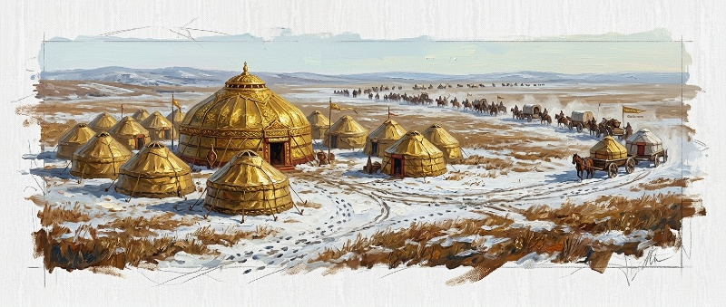
Yang sering luput dari narasi populer adalah betapa dalamnya keterjalinan antara Rus dan Horde. Para sejarawan kini menekankan bahwa pangeran-pangeran Rusia bukan sekadar korban pasif di pinggiran kekuasaan stepa, melainkan bagian yang terjalin erat dalam struktur negara nomaden itu sendiri—Golden Horde melakukan sensus penduduk, menarik pajak, dan mengawasi ketat pangeran agung Vladimir sebagai figur tertinggi di antara para bawahannya. Setelah keruntuhan Great Horde pada 1502, negara Rusia yang baru merdeka justru mengalami ekspansi teritorial terbesar dalam sejarah satu negara mana pun—dari Volga hingga Pasifik dalam kurun kurang dari 150 tahun, sebuah pola yang oleh sejumlah sejarawan diyakini mewarisi langsung logika ekspansi dan sentralisasi kekuasaan ala Horde.
What popular narratives often miss is just how deeply intertwined Rus and the Horde truly were. Historians now stress that Russian princes were never merely passive victims on the fringe of steppe power, but were woven tightly into the nomadic state's own structure — the Golden Horde conducted a census of the population, levied taxes, and closely oversaw the Grand Prince of Vladimir as the senior figure among its vassals. After the fall of the Great Horde in 1502, the newly independent Russian state underwent the largest territorial expansion in the history of any single nation — from the Volga to the Pacific in under 150 years, a pattern several historians believe directly inherited the Horde's own logic of expansion and centralized power.
Pada era Soviet, pengalaman vasal Rusia terhadap Horde justru disamarkan dan nyaris dihapus dari buku pelajaran; sejarawan bahkan dilarang menggunakan istilah "Horde." Baru pada dekade-dekade belakangan, sejarawan mulai membaca ulang arsip dan mengakui bahwa fondasi birokrasi terpusat Moskow—termasuk sistem pajak, pos, dan kontrol militer—banyak berutang pada model pemerintahan Mongol yang pernah mereka lawan.
During the Soviet era, Russia's vassalage to the Horde was downplayed and nearly erased from textbooks; historians were even barred from using the word "Horde." Only in recent decades have historians begun rereading the archives and acknowledging that Moscow's centralized bureaucratic foundations — including its tax system, postal network, and military control — owed much to the very Mongol governance model it had once fought against.
Saksi Mata dari Maroko: Ibnu Battuah di Istana Uzbeg KhanAn Eyewitness from Morocco: Ibn Battuta at Uzbeg Khan's Court
Salah satu catatan luar paling hidup tentang kemegahan Golden Horde datang dari penjelajah Maroko Ibnu Battuah, yang singgah di wilayah kekuasaan Uzbeg Khan pada 1332–1334 dalam perjalanan panjangnya menuju Delhi. Dalam Rihla—catatan perjalanannya yang legendaris—Ibnu Battuah menggambarkan istana keliling Uzbeg Khan sebagai kota tenda raksasa yang berpindah bersama musim, lengkap dengan paviliun emas tempat sultan mengadakan audiensi setiap Jumat, singgasana berlapis perak yang dihiasi permata, serta tata krama istana yang jauh berbeda dari kelaziman dunia Islam yang ia kenal: alih-alih menjamu tamu dengan tempat tinggal dan uang saku, tuan rumah Turki-Mongol ini justru mengirimkan domba, kuda, dan kantung-kantung kumis (susu kuda fermentasi) sebagai bentuk penghormatan.
One of the liveliest outside accounts of the Golden Horde's splendor comes from the Moroccan traveler Ibn Battuta, who visited Uzbeg Khan's territory in 1332–1334 during his long journey toward Delhi. In the Rihla — his legendary travel account — Ibn Battuta describes Uzbeg Khan's traveling court as a giant tent-city that moved with the seasons, complete with a golden pavilion where the sultan held audience every Friday, a silver-plated, jewel-studded throne, and court customs quite unlike anything he knew from the rest of the Islamic world: rather than housing guests and giving them pocket money, his Turko-Mongol hosts instead sent sheep, horses, and skins of kumis (fermented mare's milk) as marks of honor.
Momen paling mengesankan dari kunjungan itu terjadi ketika Ibnu Battuah diizinkan ikut serta dalam rombongan salah satu istri Uzbeg Khan, Putri Bayalun—puteri Kaisar Bizantium Andronikos III—yang tengah hamil dan hendak pulang melahirkan di Konstantinopel. Perjalanan itu membawanya melintasi batas dunia Islam untuk pertama kalinya, menyaksikan langsung kemegahan Hagia Sophia dan berdialog dengan pendeta Ortodoks tentang perjalanannya ke Yerusalem—sebuah pertemuan lintas iman yang menegaskan betapa Golden Horde, meski telah memeluk Islam di bawah Uzbeg, tetap menjadi persimpangan peradaban yang mempertemukan Turki, Slavia, Bizantium, dan dunia Islam dalam satu jaringan diplomatik dan dagang yang hidup.
The most memorable moment of the visit came when Ibn Battuta was allowed to join the retinue of one of Uzbeg Khan's wives, Princess Bayalun — daughter of the Byzantine Emperor Andronikos III — who was pregnant and traveling home to give birth in Constantinople. That journey carried him beyond the borders of the Islamic world for the first time, letting him witness the splendor of Hagia Sophia firsthand and converse with Orthodox priests about his planned journey to Jerusalem — an interfaith encounter that underscores how the Golden Horde, even after converting to Islam under Uzbeg, remained a crossroads of civilizations, bringing Turks, Slavs, Byzantines, and the Islamic world together in one living network of diplomacy and trade.
Ibnu Battuah mencatat dengan nada terkejut bahwa begitu rombongan mendekati Konstantinopel, Putri Bayalun berhenti menjalankan seruan azan dan mulai kembali minum anggur serta makan daging babi—sebuah pengingat bahwa identitas keagamaan di istana-istana Mongol, bahkan setelah konversi resmi, sering kali jauh lebih cair dan situasional dibanding yang tergambar dalam catatan-catatan resmi kerajaan.
Ibn Battuta notes, with evident surprise, that as soon as the party neared Constantinople, Princess Bayalun stopped observing the call to prayer and resumed drinking wine and eating pork — a reminder that religious identity at Mongol courts, even after formal conversion, was often far more fluid and situational than official court records suggest.
"Tatar Yoke" meninggalkan jejak dalam bahasa, seni, dan bahkan arsitektur istana Rusia. Perdagangan yang berkembang di bawah kendali Horde menjadi fondasi ekonomi bagi kebangkitan Moskow sebagai pusat kekuasaan baru.
The "Tatar Yoke" left its mark on Russian language, art, and even palace architecture. Trade that flourished under Horde control became the economic foundation for Moscow's rise as a new center of power.
Senja Golden Horde: Timur dan Kebangkitan MoskowTwilight of the Golden Horde: Timur and the Rise of Moscow
Kejayaan Golden Horde tidak pernah benar-benar pulih setelah Masa Kekacauan Besar (1359–1381), dua dekade perebutan tahta oleh lebih dari dua puluh khan yang silih berganti dalam rentang waktu yang nyaris komikal. Tokhtamysh sempat menyatukan kembali khanate ini pada 1381–1395—bahkan sempat mengepung dan meratakan Moskow pada 1382—namun ambisinya membawa petaka. Ia menantang gurunya sendiri, Timur (Tamerlane), penguasa baru yang tengah bangkit dari puing-puing Khanate Chagatai di Asia Tengah. Dalam kampanye 1395–1396, Timur menghancurkan Sarai dan kota-kota utama Horde, meluluhlantakkan jalur dagang Volga yang selama ini menjadi tulang punggung ekonominya. Golden Horde tidak pernah pulih dari pukulan itu.
The Golden Horde's glory never fully recovered after the Great Troubles (1359–1381), two decades of succession struggles among more than twenty khans who traded the throne at an almost comical pace. Tokhtamysh briefly reunified the khanate in 1381–1395 — even besieging and razing Moscow in 1382 — but his ambition proved disastrous. He challenged his own mentor, Timur (Tamerlane), the new power rising from the ruins of the Chagatai Khanate in Central Asia. In his 1395–1396 campaign, Timur destroyed Sarai and the Horde's other major cities, wrecking the Volga trade route that had long been its economic backbone. The Golden Horde never recovered from that blow.
Kekosongan kekuasaan yang tersisa terpecah menjadi khanate-khanate kecil—Kazan (1438), Krimea (1441), Astrakhan (1466)—sementara pusat yang tersisa hanya dikenal sebagai "Great Horde." Di sinilah ironi sejarah berputar penuh: instrumen kekuasaan yang dulu ditanamkan Horde ke tubuh Rusia—sensus, pajak terpusat, jaringan pos—kini justru menjadi modal bagi Adipati Agung Moskow untuk membangun negara barunya sendiri. Pada 1480, di tepi Sungai Ugra, Ivan III menolak membayar upeti dan berhadapan langsung dengan Khan Ahmad dari Great Horde dalam sebuah kebuntuan tanpa pertempuran besar—dikenal sebagai Pendirian Agung di Sungai Ugra—yang secara simbolis mengakhiri 250 tahun "Kuk Tatar." Setahun kemudian, Ahmad Khan tewas dibunuh oleh saingannya sendiri, dan pada 1502 Great Horde dihapuskan sepenuhnya oleh Khanate Krimea. Kekaisaran yang dulu memaksa para pangeran Rus berlutut demi yarlyk kini lenyap, digantikan oleh negara Moskow yang lahir justru dari rahim struktur kekuasaan yang ia warisi.
The remaining power vacuum splintered into smaller khanates — Kazan (1438), Crimea (1441), Astrakhan (1466) — while the remaining center became known only as the "Great Horde." Here history's irony comes full circle: the very instruments of power the Horde had once implanted in Russia — census, centralized taxation, a postal network — now became the capital the Grand Duke of Moscow used to build his own new state. In 1480, on the banks of the Ugra River, Ivan III refused to pay tribute and faced Khan Ahmad of the Great Horde in a standoff without major battle — known as the Great Stand on the Ugra River — which symbolically ended 250 years of the "Tatar Yoke." A year later, Ahmad Khan was killed by his own rival, and in 1502 the Great Horde was extinguished entirely by the Crimean Khanate. The empire that once forced Rus princes to kneel for a yarlyk was gone, replaced by a Moscow state born from the very power structure it had inherited.
Khanate Krimea, cucu terakhir Golden Horde, justru bertahan paling lama—menjadi vasal Kesultanan Utsmaniyah dan baru ditaklukkan Kekaisaran Rusia pada 1783, tiga abad penuh setelah "keruntuhan" resmi Horde di Sungai Ugra.
The Crimean Khanate, the Golden Horde's last grandchild, outlasted them all — becoming an Ottoman vassal and only falling to the Russian Empire in 1783, a full three centuries after the Horde's official "collapse" on the Ugra River.
Dadu, Khanbaliq, dan Kubilai Khan Sang Kaisar Dua DuniaDadu, Khanbaliq, and Kublai Khan, Emperor of Two Worlds
Kublai Khan, cucu Genghis Khan yang menaklukkan Dinasti Song Selatan pada 1279, adalah figur paradoks: seorang penunggang kuda stepa yang mengenakan jubah Kaisar Cina dan mengklaim Mandat Langit. Ia memindahkan ibu kota dari Karakorum yang berdebu ke Khanbaliq (Beijing modern), membangun birokrasi bergaya Cina lengkap dengan sistem pajak terpusat, mata uang kertas berskala kontinental, dan jaringan kanal serta pos yang dipugar dari warisan Dinasti Song.
Kublai Khan, Genghis Khan's grandson who conquered the Southern Song Dynasty in 1279, was a figure of paradox: a steppe horseman wearing the robes of a Chinese Emperor, claiming the Mandate of Heaven. He moved the capital from dusty Karakorum to Khanbaliq (modern Beijing), building a Chinese-style bureaucracy complete with centralized taxation, a continent-scale paper currency, and a network of canals and postal roads restored from the Song Dynasty's legacy.
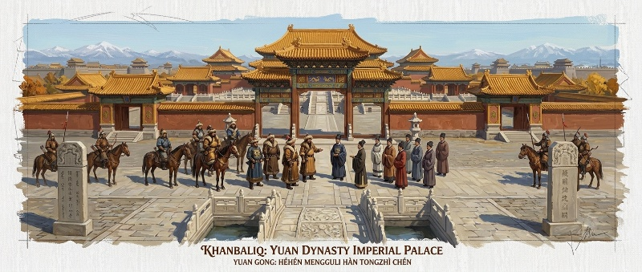
Namun Kublai tidak pernah sepenuhnya "menjadi Cina." Ia menetapkan hierarki etnis yang menempatkan orang Mongol di puncak, disusul orang Asia Tengah, Cina Utara, dan terakhir Cina Selatan—kelompok mayoritas penduduk yang justru berada di lapisan terbawah kekuasaan. Ia mempekerjakan orang asing, termasuk pedagang Venesia Marco Polo, dalam posisi-posisi administratif tinggi, kadang melampaui pejabat Cina sendiri. Istananya menjadi ruang pertemuan lintas peradaban: pejabat berbicara dalam bahasa Mongol, Persia, Turki, dan Cina sekaligus; masakan istana memadukan cita rasa dari seluruh penjuru kekaisaran; dan Kublai sendiri, meski secara pribadi condong pada praktik perdukunan asli Mongol, memberi perlindungan pada Buddhisme Tibet, Taoisme, dan komunitas Muslim.
Yet Kublai never fully "became Chinese." He set an ethnic hierarchy that placed Mongols at the top, followed by Central Asians, northern Chinese, and finally southern Chinese — the majority population, who sat at the very bottom of the power structure. He employed foreigners, including the Venetian merchant Marco Polo, in high administrative posts, at times outranking Chinese officials themselves. His court became a crossroads of civilizations: officials spoke Mongolian, Persian, Turkic, and Chinese all at once; court cuisine blended flavors from every corner of the empire; and Kublai himself, though personally inclined toward native Mongol shamanism, extended protection to Tibetan Buddhism, Taoism, and the Muslim community.
Selama sekitar tujuh belas tahun di istana Kublai, catatan perjalanan Marco Polo tentang kota-kota raksasa, sistem pos yang efisien, dan kemewahan tak terbayangkan memicu rasa penasaran Eropa yang akan bermuara pada era penjelajahan samudra berabad-abad kemudian. Sejarawan masih memperdebatkan sejauh mana kisah itu murni pengalaman langsung, namun dampaknya terhadap imajinasi Barat tentang Timur tidak terbantahkan.
Over roughly seventeen years at Kublai's court, Marco Polo's account of giant cities, an efficient postal system, and unimaginable luxury ignited a European curiosity that would eventually help fuel the age of oceanic exploration centuries later. Historians still debate how much of the account was purely firsthand experience, but its impact on the Western imagination of the East is beyond dispute.
Istana musim panas Kublai di Shangdu—yang oleh orang Eropa dieja "Xanadu"—hidup jauh melampaui reruntuhan fisiknya lewat mitos dan sastra Barat. Lima abad kemudian, penyair Inggris Samuel Taylor Coleridge mengabadikannya dalam puisi terkenal Kubla Khan, mencitrakan istana itu sebagai tempat mistis dengan sungai suci yang mengalir ke gua tak berdasar—bukti bahwa bayang-bayang kemegahan Yuan terus membentuk imajinasi Barat tentang Timur jauh setelah dinasti itu sendiri lenyap dari peta.
Kublai's summer palace at Shangdu — which Europeans spelled "Xanadu" — lived on far beyond its physical ruins through Western myth and literature. Five centuries later, the English poet Samuel Taylor Coleridge immortalized it in his famous poem Kubla Khan, picturing the palace as a mystical place with a sacred river running into a bottomless cavern — proof that the shadow of Yuan grandeur kept shaping the Western imagination of the East long after the dynasty itself had vanished from the map.
Ambisi maritim Kublai tidak selalu berbuah manis. Dua invasi ke Jepang berakhir dengan armada yang dihantam badai kamikaze ("angin dewa"), sementara ekspedisi ke Jawa—seperti diuraikan pada Bab 7—terjebak dalam jerat hutan tropis Nusantara. Batas kekuatan tempur padang rumput ternyata berhenti di garis pantai dan rimba.
Kublai's maritime ambitions did not always bear sweet fruit. Two invasions of Japan ended with fleets battered by the kamikaze ("divine wind") storms, while the expedition to Java — as described in Chapter 7 — was trapped in the archipelago's tropical jungle. The limits of steppe fighting power, it turned out, stopped at the coastline and the treeline.
Masa Perkembangan: Sembilan Kaisar dalam Tujuh Puluh Empat TahunAn Age of Turmoil: Nine Emperors in Seventy-Four Years
Setelah Kublai wafat pada 1294, tahta Yuan berpindah tangan sembilan kali dalam tujuh puluh empat tahun berikutnya—kecepatan pergantian yang jauh melampaui rata-rata dinasti Cina mana pun, cermin betapa rapuhnya fondasi suksesi warisan sistem kekuasaan Mongol begitu dipaksakan ke dalam kerangka birokrasi kekaisaran menetap. Temür Khan, cucu Kublai yang naik tahta pada 1294, berhasil menjaga kestabilan relatif hingga wafat pada 1307—namun perebutan kekuasaan sesudahnya justru berlangsung terbuka. Külüg Khan (1307–1311) naik lewat perebutan tahta yang meninggalkan negara terlilit utang akibat kebijakan moneter yang serampangan; ia mencetak uang kertas baru tanpa perhitungan matang, memicu inflasi yang akan terus menghantui dinasti ini hingga akhir.
After Kublai died in 1294, the Yuan throne changed hands nine times over the following seventy-four years — a rate of turnover far beyond any Chinese dynasty's average, a mirror of just how fragile Mongol succession customs became once forced into the framework of a settled imperial bureaucracy. Temür Khan, Kublai's grandson, who took the throne in 1294, managed to hold relative stability until his death in 1307 — but the power struggle that followed played out entirely in the open. Külüg Khan (1307–1311) rose through a succession struggle that left the state drowning in debt from reckless monetary policy; he printed new paper money without careful calculation, triggering inflation that would haunt the dynasty to its very end.
Suksesi sempat berjalan mulus ketika Ayurbarwada (1311–1320) naik tahta sesuai kesepakatan sebelumnya dengan kakaknya, melanjutkan reformasi berbasis nilai-nilai Konfusianisme dan merekrut kembali para pejabat-cendekiawan Han yang sebelumnya tersisih. Namun putranya, Gegeen Khan (Shidebala, 1320–1323), yang melanjutkan agenda reformasi itu, dibunuh dalam sebuah konspirasi istana yang dikenal sebagai Kudeta Nanpo (1323)—persekongkolan lima pangeran dan pengawal kekaisaran Asud yang tak rela melihat kekuasaan tradisional bangsawan stepa tergerus oleh reformasi bergaya Cina. Ini adalah pergantian kekuasaan berdarah pertama dalam sejarah Yuan, dan sekali pintu itu terbuka, ia tak pernah benar-benar tertutup kembali.
Succession briefly ran smoothly when Ayurbarwada (1311–1320) took the throne under a prior agreement with his elder brother, continuing Confucian-based reforms and recalling the Han scholar-officials who had earlier been sidelined. But his son, Gegeen Khan (Shidebala, 1320–1323), who carried that reform agenda forward, was assassinated in a palace conspiracy known as the Coup at Nanpo (1323) — a plot by five princes and the Asud imperial guard unwilling to watch the traditional power of steppe nobility eroded by Chinese-style reform. It was the first bloody transfer of power in Yuan history, and once that door opened, it never fully closed again.
Yesün Temür (1323–1328), yang diduga kuat terlibat dalam konspirasi pembunuhan pendahulunya, naik tahta di tepi Sungai Kerulen—tempat kelahiran Genghis Khan sendiri—sebagai upaya melegitimasi kekuasaannya lewat simbolisme leluhur. Namun kematiannya pada 1328 memicu perang saudara suksesi baru antara faksi-faksi istana, melahirkan rentetan kaisar berumur pendek: Ragibagh Khan yang berkuasa hanya beberapa bulan, disusul Jayaatu Khan Tugh Temür, lalu saudaranya sendiri Khutughtu Khan Kusala—yang tewas dalam keadaan mencurigakan hanya empat hari setelah pesta penyambutannya sendiri pada 1329, kemungkinan besar diracun oleh saudaranya sendiri. Tugh Temür naik tahta untuk kedua kalinya setelah kematian misterius itu, memerintah hingga 1332 di tengah bayang-bayang tuduhan pembunuhan saudara yang tak pernah benar-benar hilang dari ingatan istana.
Yesün Temür (1323–1328), strongly suspected of involvement in his predecessor's assassination, took the throne on the banks of the Kerulen River — Genghis Khan's own birthplace — in a bid to legitimize his rule through ancestral symbolism. But his death in 1328 triggered a new succession civil war between court factions, producing a string of short-lived emperors: Ragibagh Khan, who reigned only a few months, followed by Jayaatu Khan Tugh Temür, then his own brother Khutughtu Khan Kusala — who died under suspicious circumstances just four days after his own welcoming feast in 1329, most likely poisoned by his own brother. Tugh Temür took the throne a second time after that mysterious death, ruling until 1332 under a shadow of fratricide accusations that never truly left the court's memory.
Rentetan intrik, banjir tahunan yang menghancurkan lahan pertanian sepanjang dekade 1320-an, dan inflasi yang tak kunjung terkendali ini akhirnya bermuara pada naiknya Toghon Temür (1333–1368), kaisar Yuan terakhir, yang mewarisi kerajaan yang sudah lama retak jauh sebelum Pemberontakan Serban Merah benar-benar meletus.
This chain of intrigue, the annual floods that ruined farmland throughout the 1320s, and inflation that was never brought under control finally culminated in the rise of Toghon Temür (1333–1368), the last Yuan emperor, who inherited a kingdom that had long been cracking apart well before the Red Turban Rebellion ever broke out.
Di tengah krisis banjir dan kelaparan 1320-an, istana bahkan melarang para pangeran stepa mengirim istri mereka ke ibu kota untuk mengadukan penderitaan rakyat mereka—tanda betapa jauhnya jarak yang telah terbentang antara elite Yuan yang telah terbiasa dengan kemewahan Khanbaliq dan realitas pahit yang dihadapi rakyat serta bangsawan stepa yang mereka klaim wakili.
Amid the flood and famine crisis of the 1320s, the court even barred steppe princes from sending their wives to the capital to plead their people's suffering — a sign of just how far the Yuan elite, grown accustomed to the luxury of Khanbaliq, had drifted from the bitter reality faced by the common people and steppe nobility they claimed to represent.
Senja Dinasti Yuan: Banjir, Pemberontakan Serban Merah, dan Kebangkitan MingTwilight of the Yuan Dynasty: Floods, the Red Turban Rebellion, and the Rise of the Ming
Hierarki etnis yang ditetapkan Kublai—yang menomorsatukan orang Mongol dan menyisihkan mayoritas Han Cina ke lapisan terbawah kekuasaan—menyimpan bara yang menyala perlahan selama hampir satu abad. Krisis memuncak ketika birokrasi Yuan gagal mengurus proyek pengendalian banjir Sungai Kuning; ratusan ribu petani yang dipaksa kerja paksa memperbaiki tanggul, di tengah inflasi mata uang kertas yang tak terkendali, justru menjadi bahan bakar pemberontakan. Pada 1351, meletuslah Pemberontakan Serban Merah, gerakan populer berbasis sinkretisme Buddha-Maitreya yang menyebar cepat ke seluruh Cina selatan.
The ethnic hierarchy Kublai had established — placing Mongols first and pushing the Han Chinese majority to the bottom of the power structure — kept a slow-burning ember alive for nearly a century. The crisis peaked when the Yuan bureaucracy failed to manage a Yellow River flood-control project; hundreds of thousands of peasants forced into corvée labor repairing the dikes, amid uncontrolled paper-currency inflation, became the fuel for rebellion instead. In 1351, the Red Turban Rebellion broke out, a popular movement rooted in Buddhist-Maitreya syncretism that spread rapidly across southern China.
Di antara para pemberontak itu muncul seorang bekas biksu miskin bernama Zhu Yuanzhang, yang bergabung dengan Serban Merah pada 1352 dan dalam belasan tahun berikutnya menaklukkan rival-rival sesama pemberontak satu demi satu—termasuk kemenangan dalam pertempuran laut terbesar dalam sejarah dunia saat itu. Pada 23 Januari 1368, ia memproklamasikan Dinasti Ming di Nanjing sebagai Kaisar Hongwu; delapan bulan kemudian, pasukan Ming memasuki Khanbaliq (Beijing) tanpa perlawanan berarti, memaksa kaisar Yuan terakhir, Shundi, melarikan diri ke utara menuju tanah leluhur Mongolia. Di sana, garis keturunan Kublai bertahan sebagai negara sisa yang dikenal sejarawan sebagai "Yuan Utara"—bayangan kekaisaran yang terus hidup di padang rumput hingga akhirnya ditaklukkan Dinasti Qing pada tahun 1630-an.
Among the rebels emerged a poor former monk named Zhu Yuanzhang, who joined the Red Turbans in 1352 and, over the following decade, defeated rival rebel factions one by one — including a victory in what was then the largest naval battle in world history. On 23 January 1368, he proclaimed the Ming Dynasty at Nanjing as the Hongwu Emperor; eight months later, Ming forces entered Khanbaliq (Beijing) with little meaningful resistance, forcing the last Yuan emperor, Shundi, to flee north to the Mongol ancestral homeland. There, Kublai's line survived as a residual state historians call the "Northern Yuan" — an imperial shadow that lived on across the steppe until the Qing Dynasty finally conquered it in the 1630s.
Zhu Yuanzhang, yang kehilangan seluruh keluarganya akibat kelaparan dan wabah semasa kanak-kanak di bawah pemerintahan Yuan, menjelma menjadi salah satu kaisar paling otoriter dalam sejarah Cina—sebuah siklus balas dendam sejarah yang mengulang pola lama: rakyat tertindas yang bangkit menjadi penguasa baru, seringkali dengan cengkeraman kekuasaan yang tak kalah keras dari yang mereka gulingkan.
Zhu Yuanzhang, who lost his entire family to famine and plague as a child under Yuan rule, grew into one of the most authoritarian emperors in Chinese history — a historical cycle of revenge repeating an old pattern: the oppressed rising to become the new rulers, often gripping power just as tightly as those they overthrew.
Maragheh — Observatorium di Tanah Bekas ReruntuhanMaragheh — An Observatory Rising from the Ruins
Ironi terbesar dari penaklukan Hulegu Khan atas Baghdad barangkali bukan kehancuran itu sendiri, melainkan apa yang tumbuh dari abunya. Hanya setahun setelah Ikh Khorig membumihanguskan pusat keilmuan Abbasiyah, Hulegu memerintahkan pembangunan Observatorium Maragheh di Iran barat laut pada 1259, di bawah arahan astronom Persia Nasir al-Din al-Tusi. Dalam waktu singkat, tempat ini berkembang menjadi salah satu pusat riset paling maju di dunia abad pertengahan—perpustakaannya, menurut catatan sezaman, menyimpan ratusan ribu naskah yang diselamatkan atau dikumpulkan dari Baghdad, Suriah, dan Jazira.
The greatest irony of Hulegu Khan's conquest of Baghdad may not be the destruction itself, but what grew from its ashes. Just a year after that great taboo campaign razed the Abbasid world's center of learning, Hulegu ordered the construction of the Maragheh Observatory in northwestern Iran in 1259, under the direction of the Persian astronomer Nasir al-Din al-Tusi. In a remarkably short time, it grew into one of the most advanced research centers in the medieval world — its library, according to contemporary accounts, held hundreds of thousands of manuscripts rescued or gathered from Baghdad, Syria, and the Jazira.
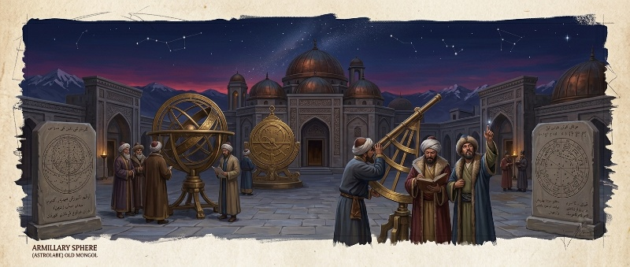
Maragheh menarik sarjana dari seluruh penjuru Eurasia—dari dunia Islam hingga Cina—yang bekerja bersama menyusun tabel astronomi Zij-i Ilkhani dan mengembangkan model pergerakan planet alternatif dari sistem geosentris Ptolemeus. Model-model matematis yang lahir di sana kelak menjadi salah satu jembatan intelektual menuju revolusi heliosentris Copernicus di Eropa tiga abad kemudian. Para khan Ilkhanate mendukung astronomi bukan semata demi sains murni, melainkan karena mereka meyakini bintang-bintang menyimpan petunjuk bagi keputusan politik dan militer—namun dari kepentingan pragmatis itu lahir salah satu lompatan keilmuan terbesar zamannya.
Maragheh drew scholars from across Eurasia — from the Islamic world to China — who worked together to compile the Zij-i Ilkhani astronomical tables and to develop alternative models of planetary motion beyond Ptolemy's geocentric system. The mathematical models born there would later become one of the intellectual bridges to Copernicus's heliocentric revolution in Europe three centuries on. Ilkhanate khans supported astronomy not purely for science's sake, but because they believed the stars held clues for political and military decisions — yet from that pragmatic interest came one of the greatest scholarly leaps of the age.
Alih-alih memaksakan bahasa Mongol, para penguasa Ilkhanate justru mengukuhkan Persia sebagai bahasa administrasi—sebuah keputusan yang menjaga kesinambungan identitas kultural Iran di bawah kekuasaan asing, dan pada akhirnya melahirkan sintesis arsitektur serta seni yang memadukan motif Persia, Mongol, dan Cina, termasuk pada makam megah di Sultaniyya.
Rather than imposing the Mongol language, Ilkhanate rulers instead entrenched Persian as the language of administration — a decision that preserved the continuity of Iranian cultural identity under foreign rule, and ultimately produced an architectural and artistic synthesis blending Persian, Mongol, and Chinese motifs, including in the grand mausoleum at Sultaniyya.
Generasi belakangan penguasa Ilkhanate akhirnya memeluk Islam, membuka jalan bagi integrasi lebih dalam dengan mayoritas rakyat yang mereka perintah—sebuah pola yang berulang di banyak wilayah taklukan Mongol: penakluk yang, cepat atau lambat, diserap oleh peradaban yang mereka taklukkan. Momen puncaknya jatuh pada 1295, ketika Ghazan Khan resmi memeluk Islam atas dorongan kuat emir Muslim Amir Nawruz—langkah kalkulasi politik untuk meredakan ketegangan kultural setelah dekade-dekade penindasan yang dirasakan mayoritas rakyat Muslim di bawah penguasa yang masih menganut Tengrisme atau Buddhisme. Konversi ini bukan proses serentak di seluruh dunia Mongol, melainkan dialektika politik panjang antara kebutuhan legitimasi lokal dan tradisi adat stepa warisan Yassa—Golden Horde di bawah Berke Khan (Bab 10) telah lebih dulu memeluk Islam sejak dekade 1240-an, sementara Yuan di timur (Bab 11) justru tetap mempertahankan pluralisme Tengrisme-Buddhisme-Taoisme hingga akhir.
Later generations of Ilkhanate rulers eventually converted to Islam, opening the way to deeper integration with the majority population they governed — a pattern repeated across many Mongol-conquered territories: conquerors who, sooner or later, were absorbed by the civilizations they conquered. The turning point came in 1295, when Ghazan Khan formally converted to Islam under strong pressure from the Muslim emir Amir Nawruz — a calculated political move to ease cultural tension after decades of resentment felt by the majority Muslim population under rulers who still practiced Tengrism or Buddhism. The conversion was never a simultaneous process across the Mongol world, but a long political dialectic between local legitimacy needs and steppe customary tradition inherited from the Yassa — the Golden Horde under Berke Khan (Chapter 10) had already converted to Islam since the 1240s, while the Yuan in the east (Chapter 11) instead maintained Tengrist-Buddhist-Taoist pluralism to the very end.
Rashid al-Din: Wazir yang Menulis Sejarah Dunia PertamaRashid al-Din: The Vizier Who Wrote the First World History
Di antara seluruh warisan intelektual Ilkhanate, tak ada yang lebih ambisius dari proyek Jami' al-Tawarikh ("Kumpulan Sejarah") yang digagas wazir Rashid al-Din Hamadani pada awal abad ke-14 atas perintah Ilkhan Ghazan dan penerusnya, Öljaitü. Awalnya lahir sebagai Muslim dari keluarga tabib Yahudi yang beralih agama, Rashid al-Din naik ke puncak birokrasi Ilkhanate hingga menjadi wazir—posisi tertinggi kedua setelah khan sendiri. Memanfaatkan akses istimewanya ke arsip kekaisaran, termasuk kronik Mongol yang kini hilang bernama Altan Debter ("Buku Emas") serta kesaksian langsung Bolad, menteri senior yang pernah bertugas baik di istana Yuan maupun Ilkhanate, Rashid al-Din menyusun karya yang oleh banyak sejarawan modern dijuluki "sejarah dunia" pertama—mencakup bukan hanya riwayat Mongol, melainkan juga sejarah Cina, India, Eropa, dan dunia Yahudi dalam satu kerangka naratif tunggal, sebuah ambisi intelektual yang belum pernah dicoba peradaban mana pun sebelumnya.
Among all the Ilkhanate's intellectual legacies, none was more ambitious than the Jami' al-Tawarikh ("Compendium of Chronicles") project launched by vizier Rashid al-Din Hamadani in the early fourteenth century, commissioned by Ilkhan Ghazan and his successor, Öljaitü. Born a Muslim into a family of converted Jewish physicians, Rashid al-Din rose to the top of the Ilkhanate bureaucracy to become vizier — the second-highest office after the khan himself. Drawing on privileged access to the imperial archives, including a now-lost Mongol chronicle called the Altan Debter ("Golden Book") and the firsthand testimony of Bolad, a senior minister who had served at both the Yuan and Ilkhanate courts, Rashid al-Din compiled a work many modern historians call the first "world history" — encompassing not only Mongol history but the histories of China, India, Europe, and the Jewish world within a single narrative framework, an intellectual ambition no civilization had ever attempted before.
Karya inilah yang menjadi salah satu sumber utama sejarawan modern untuk merekonstruksi detail-detail yang hilang dari catatan Mongol asli—termasuk episode-episode yang diuraikan di sepanjang naskah ini, dari kematian Ögedei hingga rincian Perang Berke–Hulegu. Ironisnya, kejeniusan administratif Rashid al-Din tak melindunginya dari nasib banyak pejabat tinggi Ilkhanate lainnya: ia dieksekusi pada 1318 akibat tuduhan meracuni Öljaitü—tuduhan yang oleh sejarawan belakangan dinilai kemungkinan besar hanya dalih politik dari rival-rivalnya di istana.
This very work has become one of the chief sources modern historians use to reconstruct details lost from the original Mongol record — including many of the episodes described throughout this chronicle, from Ögedei's death to the details of the Berke–Hulegu War. Ironically, Rashid al-Din's administrative brilliance did not spare him the fate of many other Ilkhanate officials: he was executed in 1318 on charges of poisoning Öljaitü — accusations later historians largely believe were merely a political pretext from his rivals at court.
Naskah asli Jami' al-Tawarikh yang diperkaya ilustrasi bergaya lukisan Cina-Persia kini tersebar di berbagai perpustakaan dunia—dari Edinburgh hingga Istanbul—dan tetap menjadi rujukan utama studi sejarah Mongol hingga hari ini, delapan abad setelah penulisannya.
The original manuscripts of the Jami' al-Tawarikh, richly illustrated in a Sino-Persian painting style, are now scattered across libraries around the world — from Edinburgh to Istanbul — and remain a primary reference for the study of Mongol history to this day, eight centuries after they were written.
Senja Ilkhanate: Kematian Tanpa Pewaris dan Bayangan TimurTwilight of the Ilkhanate: A Death Without Heirs and the Shadow of Timur
Ilkhan Abu Sa'id Bahadur Khan memerintah dengan cukup cakap—masanya bahkan dikenang belakangan sebagai semacam zaman keemasan dibanding kekacauan yang menyusul. Namun pada malam 30 November 1335, dalam perjalanan menghadapi invasi Özbeg dari Golden Horde, ia wafat di Karabakh tanpa pewaris—diduga diracun oleh salah satu istrinya sendiri, Baghdad Khatun, meski sejarawan modern menduga wabah pes yang sama yang tengah merambat lewat jalur dagang Pax Mongolica (lihat Bab 13) sebagai penyebab yang lebih mungkin. Kekosongan tahta ini terbukti fatal: dalam hitungan bulan, faksi-faksi bangsawan—Jalayirid, Chupanid, dan gerakan Sarbadar yang baru muncul—saling bertarung memperebutkan legitimasi, sementara sejumlah kandidat khan boneka silih berganti naik-turun tahta tanpa kendali nyata.
Ilkhan Abu Sa'id Bahadur Khan ruled with considerable skill — his reign was later remembered as something of a golden age compared to the chaos that followed. But on the night of 30 November 1335, while marching to confront an Özbeg invasion from the Golden Horde, he died at Karabakh without an heir — allegedly poisoned by one of his own wives, Baghdad Khatun, though modern historians suspect the same plague then spreading along the Pax Mongolica's trade routes (see Chapter 13) as the more likely cause. The empty throne proved fatal: within months, noble factions — Jalayirid, Chupanid, and the newly emerged Sarbadar movement — fought each other over legitimacy, while a succession of puppet khan candidates rose and fell without any real control.
Ilkhanate yang dulu menaungi Observatorium Maragheh kini terpecah menjadi kerajaan-kerajaan kecil yang rapuh terhadap tekanan dari luar—termasuk dari Golden Horde yang justru masih relatif solid pada masa itu. Kekosongan inilah yang, mulai 1370-an, diisi oleh Timur (Tamerlane), penakluk baru asal Transoxiana yang mencaplok wilayah-wilayah bekas Ilkhanate satu demi satu dan mendirikan Imperium Timurid (1370–1507)—kekuatan dominan baru di jantung dunia Islam-Persia yang akan bertahan lebih dari satu abad.
The Ilkhanate that once sheltered the Maragheh Observatory now splintered into small, fragile kingdoms vulnerable to outside pressure — including from the Golden Horde, which remained relatively solid at the time. It was this vacuum that, beginning in the 1370s, was filled by Timur (Tamerlane), a new conqueror from Transoxiana who annexed the former Ilkhanate's territories one by one and founded the Timurid Empire (1370–1507) — a new dominant power at the heart of the Persian-Islamic world that would endure for more than a century.
Penjelajah Maroko Ibnu Battuta, yang kembali ke Persia setelah dua puluh tahun mengembara, menuliskan keheranannya sendiri menyaksikan betapa cepat kekuasaan yang dulu tampak begitu perkasa itu larut menjadi serpihan-serpihan kecil—sebuah catatan mata saksi langsung atas kecepatan keruntuhan yang jarang terekam sedetail itu dalam sejarah abad pertengahan.
The Moroccan traveler Ibn Battuta, returning to Persia after twenty years of wandering, wrote of his own astonishment at witnessing how quickly a power that once seemed so mighty had dissolved into tiny fragments — a rare firsthand eyewitness record of a collapse whose speed is seldom captured in such detail elsewhere in medieval history.
Pax Mongolica dan Entropi KekaisaranPax Mongolica and the Empire's Entropy
Meskipun lahir dari kekerasan, era Pax Mongolica menyatukan Jalur Sutra dalam satu kendali keamanan tunggal. Pertukaran teknologi cetak, bubuk mesiu, kompas, astronomi, dan kedokteran mengalir deras antara Tiongkok, dunia Islam, dan Eropa. Namun, keterbukaan global ini membawa bumerang biologis: Maut Hitam (Black Death) merayap melalui jalur dagang yang sama, merontokkan pusat-pusat demografi kekaisaran. Intrik istana, devaluasi mata uang kertas (Chao), dan hilangnya sentuhan fisik elite Mongol dengan realitas padang rumput memicu keruntuhan total pada abad ke-14.
Though born of violence, the Pax Mongolica era united the Silk Road under a single security umbrella. The exchange of printing technology, gunpowder, the compass, astronomy, and medicine flowed freely between China, the Islamic world, and Europe. But this global openness carried a biological boomerang: the Black Death crept along those same trade routes, devastating the empire's demographic centers. Court intrigue, the devaluation of paper currency (chao), and the Mongol elite's growing disconnection from the physical reality of the grassland triggered total collapse by the fourteenth century.
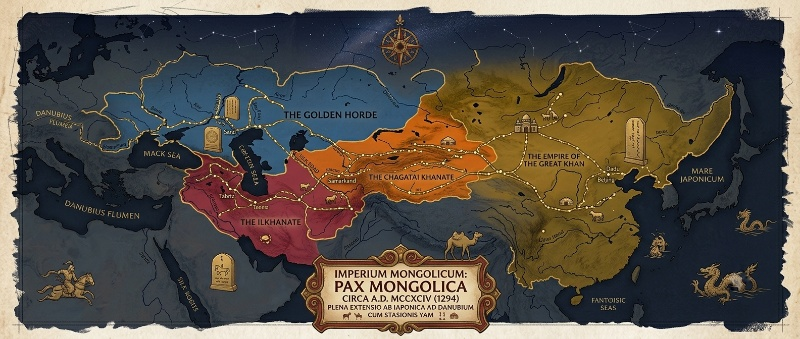
Luas yang Tak Tertandingi: Geografi, Peradaban, dan EkonomiAn Unmatched Expanse: Geography, Civilization, and Economy
Untuk memahami skala sesungguhnya dari apa yang dibangun dan kemudian runtuh ini, angka-angka mentahnya perlu disandingkan. Wilayah kekuasaan Mongol melonjak dari sekitar 4 juta kilometer persegi pada 1206—saat Kurultai pertama menobatkan Genghis Khan—menjadi 13,5 juta kilometer persegi hanya dua dekade kemudian pada 1227, dan akhirnya mencapai puncaknya sekitar 23,5 juta kilometer persegi pada 1294, ketika Kublai Khan wafat dan pembagian empat khanate mengeras menjadi kenyataan permanen. Angka puncak itu setara dengan sekitar 16 persen dari total daratan bumi yang dihuni manusia—wilayah kontinu terbesar yang pernah dikuasai satu dinasti tunggal dalam sejarah manusia, membentang dari Laut Jepang di timur hingga tepi Danube di barat, dari Siberia di utara hingga Teluk Persia dan dataran tinggi Tibet di selatan.
To grasp the true scale of what was built and then collapsed, the raw numbers deserve to be set side by side. Mongol-held territory leapt from roughly 4 million square kilometers in 1206 — when the first Kurultai enthroned Genghis Khan — to 13.5 million square kilometers just two decades later in 1227, and finally peaked at around 23.5 million square kilometers in 1294, when Kublai Khan died and the four-khanate division hardened into permanent reality. That peak figure equals about 16 percent of the earth's inhabited landmass — the largest contiguous territory ever held by a single dynasty in human history, stretching from the Sea of Japan in the east to the banks of the Danube in the west, from Siberia in the north to the Persian Gulf and the Tibetan plateau in the south.
Di dalam batas seluas itu, imperium menaungi puluhan peradaban yang sebelumnya nyaris tak saling mengenal secara langsung: dunia Konfusianisme-Buddhis Asia Timur, dunia Islam Persia-Arab, dunia Kristen Ortodoks Slavia, kerajaan-kerajaan Hindu-Buddha di perbatasan India, hingga kantong-kantong Kristen Nestorian yang tersebar di sepanjang Asia Tengah. Populasi yang berada di bawah kendali langsung atau tak langsung kekaisaran diperkirakan sejarawan mencapai seperempat hingga sepertiga populasi dunia pada masanya—sebuah cakupan demografis yang, secara proporsional, belum pernah dilampaui kekaisaran darat mana pun sesudahnya, termasuk Kekaisaran Britania yang jauh lebih luas secara wilayah namun tersebar lewat jalur laut, bukan daratan kontinu.
Within that vast expanse, the empire sheltered dozens of civilizations that had previously barely known one another directly: the Confucian-Buddhist world of East Asia, the Persian-Arab Islamic world, the Slavic Orthodox Christian world, the Hindu-Buddhist kingdoms on India's frontier, and pockets of Nestorian Christianity scattered across Central Asia. Historians estimate the population under the empire's direct or indirect control reached a quarter to a third of the world's population at the time — a demographic reach proportionally never surpassed by any land empire since, including the British Empire, which was far larger in area but spread across sea lanes rather than continuous land.
Agama: Toleransi sebagai Instrumen, Bukan Sekadar KebajikanReligion: Tolerance as Instrument, Not Mere Virtue
Toleransi beragama Mongol—yang telah disinggung sejak Hukum Yassa di Bab 3 hingga Debat Karakorum di Bab 4—bukan lahir dari relativisme filosofis, melainkan dari kalkulasi kekuasaan yang sangat pragmatis. Kepercayaan asli Mongol sendiri, Tengrisme, memuja Langit Biru Abadi (Möngke Köke Tengri) sebagai kekuatan tertinggi yang menjustifikasi mandat penaklukan dunia—namun struktur teologisnya cukup longgar untuk mengakomodasi, bukan menggantikan, sistem kepercayaan bangsa-bangsa yang ditaklukkan. Para khan secara sadar menghindari memihak satu agama secara eksklusif, karena memahami bahwa pemaksaan agama tunggal ke dalam kekaisaran semajemuk itu hanya akan memicu pemberontakan yang tak perlu.
Mongol religious tolerance — already touched on from the Yassa Code in Chapter 3 to the Karakorum Debate in Chapter 4 — was born not of philosophical relativism, but of very pragmatic power calculation. The native Mongol faith itself, Tengrism, worshipped the Eternal Blue Sky (Möngke Köke Tengri) as the supreme power justifying the mandate to conquer the world — yet its theological structure was loose enough to accommodate, rather than replace, the belief systems of conquered peoples. The khans deliberately avoided favoring any single religion exclusively, understanding that forcing one faith onto so plural an empire would only spark needless rebellion.
Hasilnya adalah lanskap keagamaan paling cair dalam sejarah kekaisaran pramodern: Sorghaghtani Beki dan Doquz Khatun—istri-istri elite di rumah Tolui—memeluk Kristen Nestorian; Berke Khan di Golden Horde dan penerus-penerus Ilkhanate belakangan memeluk Islam; Kublai Khan di Cina melindungi Buddhisme Tibet sekaligus mempertahankan ritual perdukunan leluhurnya; sementara komunitas Taois, Yahudi, dan bahkan misionaris Katolik seperti Carpini dan Rubruck (Bab 4) diterima berdialog terbuka di istana. Setiap golongan agama yang diakui menerima pembebasan pajak sebagai imbalan atas doa yang mereka panjatkan bagi keselamatan khan—sebuah transaksi spiritual-politik yang menjaga stabilitas ideologis kekaisaran tanpa harus memaksakan keseragaman iman.
The result was the most fluid religious landscape of any premodern empire: Sorghaghtani Beki and Doquz Khatun — elite wives of the house of Tolui — practiced Nestorian Christianity; Berke Khan of the Golden Horde and later Ilkhanate rulers converted to Islam; Kublai Khan in China protected Tibetan Buddhism while maintaining his ancestral shamanistic rituals; while Taoist and Jewish communities, and even Catholic missionaries such as Carpini and Rubruck (Chapter 4), were welcomed into open dialogue at court. Every recognized faith received tax exemption in exchange for prayers offered for the khan's wellbeing — a spiritual-political transaction that preserved the empire's ideological stability without ever forcing uniformity of belief.
Ekonomi: Ortoq, Paiza, dan Integrasi Pasar BenuaEconomy: Ortoq, Paiza, and Continental Market Integration
Di balik jaringan Jalur Sutra yang dihidupkan kembali (Bab 6), berdiri institusi ekonomi yang jauh lebih canggih dari sekadar "keamanan jalur dagang." Sejak masa Genghis Khan sendiri, keluarga kerajaan dan para jenderal menitipkan modal emas dan perak kepada pedagang kepercayaan—biasanya saudagar Uighur atau Asia Tengah—dalam skema kemitraan dagang yang disebut ortoq ("mitra"). Skema ini memungkinkan pedagang mengumpulkan modal dari berbagai investor elite untuk memperkecil risiko kegagalan karavan, sembari menikmati komisi tinggi dan pinjaman berbunga rendah dari kas kekaisaran. Pada 1268, Kublai Khan bahkan mendirikan Badan Administrasi Umum untuk Pengawasan Ortoq, lembaga negara pertama di dunia yang secara khusus mengatur pinjaman dagang berskala kekaisaran—struktur kontraktual yang oleh para ekonom sejarah dinilai setara kompleksitasnya dengan skema commenda dan mudharaba yang berkembang terpisah di Venesia dan dunia Islam pada periode yang sama.
Behind the revived Silk Road network (Chapter 6) stood an economic institution far more sophisticated than mere "trade route security." As early as Genghis Khan's own time, the royal family and generals entrusted gold and silver capital to trusted merchants — usually Uighur or Central Asian traders — in a trading-partnership scheme called ortoq ("partner"). The scheme let merchants pool capital from multiple elite investors to spread the risk of caravan failure, while enjoying high commissions and low-interest loans from the imperial treasury. In 1268, Kublai Khan even established the General Administration for the Supervision of Ortoq, the world's first state body specifically regulating empire-scale trade lending — a contractual structure economic historians consider comparable in complexity to the commenda and mudaraba schemes developing separately in Venice and the Islamic world at the same time.
Untuk memfasilitasi mobilitas para pedagang dan pejabat ini, kekaisaran menerbitkan paiza—lempengan logam (kadang emas, perak, atau perunggu, tergantung status pemegangnya) yang berfungsi sebagai identitas resmi sekaligus izin akses ke stasiun pos Yam dan hak menuntut perbekalan dari penduduk setempat. Penyalahgunaan paiza oleh bangsawan yang kelewat leluasa memaksa Ögedei Khan (Bab 4) melarang penerbitannya sembarangan, sementara Möngke belakangan justru membatasi hak istimewa ortoq yang mulai dianggap terlalu banyak membebani rakyat. Kombinasi ortoq dan paiza inilah yang menjadikan volume perdagangan lintas-Eurasia pada abad ke-13 dan awal abad ke-14 mencapai tingkat yang tak akan tertandingi lagi hingga era pelayaran samudra Eropa dua abad kemudian.
To ease the mobility of these merchants and officials, the empire issued the paiza — a metal plaque (sometimes gold, silver, or bronze, depending on the holder's rank) that served as official identification and access permit to Yam relay stations, and the right to demand supplies from local populations. Abuse of the paiza by overly liberal nobles forced Ögedei Khan (Chapter 4) to ban its indiscriminate issuance, while Möngke later restricted ortoq privileges that had come to be seen as too burdensome on the people. This combination of ortoq and paiza pushed cross-Eurasian trade volume in the thirteenth and early fourteenth centuries to a level unmatched again until the age of European oceanic voyages two centuries later.
Ilmu Pengetahuan: Pertukaran yang Melampaui Batas PeradabanScience: An Exchange That Crossed Civilizational Lines
Selain Observatorium Maragheh (Bab 12) yang telah diuraikan, pertukaran ilmiah era Pax Mongolica merambah jauh lebih luas. Di istana Yuan, biro kartografi kekaisaran memadukan pengetahuan geografis Cina dengan peta-peta dunia Islam yang dibawa lewat jalur dagang, menghasilkan pemetaan Eurasia paling akurat pada masanya—jauh mendahului standar kartografi Eropa hingga era Renaisans. Pengobatan Islam, lengkap dengan traktat-traktat farmakologi Ibnu Sina, diterjemahkan ke bahasa Cina dan disatukan ke dalam kurikulum medis istana Yuan; sebaliknya, teknik pencetakan dan konsep angka desimal-posisional dari Cina memperkaya tradisi matematika dan administratif dunia Islam. Kublai Khan bahkan mendirikan lembaga terpisah untuk astronomi Islam (Huihui Sitianjian) yang berjalan berdampingan dengan biro astronomi tradisional Cina—dua tradisi keilmuan berbeda yang, alih-alih saling menggantikan, dibiarkan bersaing dan saling memperkaya di bawah satu atap istana.
Beyond the already-described Maragheh Observatory (Chapter 12), scientific exchange in the Pax Mongolica era reached far wider still. At the Yuan court, the imperial cartography bureau blended Chinese geographic knowledge with Islamic-world maps carried along the trade routes, producing the most accurate mapping of Eurasia of its time — well ahead of European cartographic standards until the Renaissance. Islamic medicine, complete with Ibn Sina's pharmacological treatises, was translated into Chinese and folded into the Yuan court's medical curriculum; in turn, Chinese printing techniques and the positional decimal-number concept enriched the mathematical and administrative traditions of the Islamic world. Kublai Khan even established a separate institute for Islamic astronomy (Huihui Sitianjian) running alongside the traditional Chinese astronomical bureau — two distinct scholarly traditions that, rather than replacing one another, were left to compete and enrich each other under a single court roof.
Logistik dan Birokrasi: Yam, Sensus, dan DarughachiLogistics and Bureaucracy: Yam, Census, and the Darughachi
Jaringan Yam yang diperkenalkan pada Bab 3 dan Bab 5 berkembang, pada puncaknya di era Yuan, menjadi sistem dengan lebih dari 1.400 stasiun pos hanya di wilayah Cina saja, masing-masing menyediakan kuda segar, perahu, atau bahkan anjing kereta salju tergantung medan geografisnya—jaringan logistik sipil-militer terpadu yang tak tertandingi hingga munculnya jaringan kereta api abad ke-19. Di atas jaringan fisik ini berdiri aparat birokrasi yang jauh lebih canggih dari citra "penunggang kuda barbar" yang sering melekat pada Mongol dalam narasi populer Barat. Setiap wilayah taklukan diawasi seorang darughachi—gubernur pengawas yang bertanggung jawab memungut pajak, menegakkan hukum Yassa, dan menjamin kesetiaan pejabat lokal kepada istana, tanpa harus menggantikan struktur birokrasi asli setempat sepenuhnya. Prinsip ini—memanfaatkan aparat administratif yang sudah ada alih-alih membangun dari nol—memungkinkan kekaisaran memerintah populasi yang jauh lebih besar dan majemuk dari jumlah orang Mongol itu sendiri, yang bahkan pada puncak kekuasaan diperkirakan tak lebih dari satu hingga dua juta jiwa memerintah atas puluhan juta rakyat taklukan.
The Yam network introduced in Chapter 3 and Chapter 5 grew, at its Yuan-era peak, into a system of more than 1,400 postal stations in China alone, each supplying fresh horses, boats, or even sled dogs depending on the terrain — an integrated civil-military logistics network unmatched until the rise of the railway in the nineteenth century. Above this physical network stood a bureaucratic apparatus far more sophisticated than the "barbarian horseman" image so often attached to the Mongols in popular Western narratives. Every conquered territory was overseen by a darughachi — a supervising governor responsible for collecting taxes, enforcing the Yassa, and ensuring local officials' loyalty to the court, without having to fully replace the existing local bureaucratic structure. This principle — using existing administrative machinery rather than building from scratch — let the empire govern a population far larger and more diverse than the Mongols themselves, who even at the height of their power are estimated to have numbered no more than one to two million ruling over tens of millions of conquered subjects.
Sensus berskala kekaisaran yang dirintis Möngke (Bab 4) diteruskan dan disempurnakan setiap khanate pasca-1259 dengan caranya masing-masing—Golden Horde menyensus tanah Ruthenia untuk keperluan pajak (Bab 10), sementara Yuan mengembangkan kategorisasi etnis berjenjang yang menentukan hak dan kewajiban pajak setiap golongan penduduk (Bab 11). Sistem desimal militer yang dijelaskan pada Bab 2 turut disalin ke dalam struktur birokrasi sipil di banyak wilayah, menciptakan rantai komando administratif yang, meski kaku, terbukti jauh lebih efisien mengumpulkan pajak dan menggerakkan sumber daya dibanding banyak kerajaan menetap yang mereka gantikan.
The empire-scale census pioneered by Möngke (Chapter 4) was carried forward and refined by each post-1259 khanate in its own way — the Golden Horde censused the Ruthenian lands for taxation purposes (Chapter 10), while the Yuan developed a tiered ethnic categorization determining each population group's rights and tax obligations (Chapter 11). The military decimal system described in Chapter 2 was likewise copied into the civil bureaucratic structure across many territories, creating a chain of administrative command that, however rigid, proved far more efficient at collecting taxes and mobilizing resources than many of the settled kingdoms it replaced.
Di Cina, Dinasti Yuan tumbang pada 1368 setelah kaisar Mongol terakhir, Shundi, meninggalkan Beijing menuju Mongolia, digantikan oleh Dinasti Ming yang kembali menegakkan pemerintahan etnis Han. Di Rusia, kekuatan Golden Horde melemah hingga akhirnya terserap ke dalam negara Moskow yang justru mewarisi banyak instrumen kekuasaannya. Di Persia, Ilkhanate terpecah menjadi kerajaan-kerajaan kecil yang kelak dijembatani kembali oleh penakluk baru: Timur Lenk, yang mengklaim garis keturunan dari trah Genghis Khan untuk melegitimasi kekuasaannya sendiri—bukti betapa panjang bayangan sang penakluk stepa bahkan setelah imperiumnya sendiri runtuh.
In China, the Yuan Dynasty fell in 1368 after the last Mongol emperor, Shundi, abandoned Beijing for Mongolia, replaced by a Ming Dynasty that reasserted ethnic Han rule. In Russia, the Golden Horde's power weakened until it was finally absorbed into a Moscow state that inherited many of its instruments of power. In Persia, the Ilkhanate splintered into small kingdoms later bridged again by a new conqueror: Timur, who claimed descent from Genghis Khan's line to legitimize his own rule — proof of just how long the steppe conqueror's shadow stretched, even after his own empire had collapsed.
Pola yang berulang di seluruh penjuru kekaisaran—Cina, Rusia, Persia—adalah ironi yang sama: penakluk stepa yang membangun kekuasaan lewat mobilitas dan kekerasan, pada akhirnya diserap, dilunakkan, atau digantikan oleh peradaban menetap yang mereka taklukkan.
The pattern repeated across every corner of the empire — China, Russia, Persia — is the same irony: a steppe conqueror who built power through mobility and violence, ultimately absorbed, softened, or replaced by the settled civilization it once conquered.
Khanate yang Terlupakan dan Simpul Pewaris Bernama TimurThe Forgotten Khanate and an Heir Named Timur
Di antara empat serpihan kekaisaran, Khanate Chagatai di Asia Tengah paling jarang disebut dalam narasi populer—padahal justru dari sinilah benang merah yang menyatukan nasib tiga khanate lainnya bermula. Pada 1340-an, Chagatai sendiri terbelah dua: wilayah barat di Transoxiana yang makin terpersiakan, dan wilayah timur yang dikenal sebagai Moghulistan. Pada 1363, seorang panglima kelahiran Transoxiana bernama Timur—bukan keturunan langsung Genghis Khan, melainkan seorang bangsawan Turko-Mongol dari suku Barlas—mulai mencaplok wilayah barat Chagatai yang tersisa.
Among the empire's four fragments, the Chagatai Khanate in Central Asia is the least mentioned in popular narrative — yet it was here that the connecting thread linking the fates of the other three khanates began. In the 1340s, Chagatai itself split in two: a western territory in Transoxiana growing more fragmented, and an eastern territory known as Moghulistan. In 1363, a commander born in Transoxiana named Timur — not a direct descendant of Genghis Khan, but a Turko-Mongol noble from the Barlas tribe — began seizing the remaining western Chagatai territory.
Dari titik itu, Timur melakukan sesuatu yang tak pernah dicoba khan mana pun sebelumnya: alih-alih mendirikan dinasti baru yang lepas dari klaim darah Genghis Khan, ia menikahi seorang putri keturunan Chagatai dan menyandang gelar Kürkän ("menantu kekaisaran")—mengklaim legitimasi lewat pernikahan, bukan garis darah langsung, karena hukum adat Mongol yang mengharuskan gelar khan agung hanya boleh disandang keturunan langsung Genghis Khan. Dari basis Chagatai inilah, dalam rentang tiga dekade berikutnya, Timur secara berturut-turut menelan puing-puing Ilkhanate (mulai 1370-an, lihat Bab 12) dan menghancurkan jantung ekonomi Golden Horde (kampanye 1395–1396, lihat Bab 10)—menjadikan dirinya, secara de facto, pewaris tunggal dari tiga dari empat pecahan kekaisaran Mongol, meski ia sendiri tak pernah berani menyandang gelar "Khan Agung."
From that point, Timur did something no khan had ever attempted before: rather than founding a new dynasty severed from any claim to Genghis Khan's blood, he married a Chagataid princess and took the title Kürkän ("imperial son-in-law") — claiming legitimacy through marriage rather than direct bloodline, since Mongol customary law required the title of Great Khan be held only by Genghis Khan's direct descendants. From this Chagatai base, over the following three decades, Timur successively swallowed the ruins of the Ilkhanate (from the 1370s, see Chapter 12) and shattered the economic heart of the Golden Horde (his 1395–1396 campaign, see Chapter 10) — making himself, de facto, the sole heir of three of the empire's four fragments, though he himself never dared claim the title "Great Khan."
Hanya Dinasti Yuan di timur yang luput dari jangkauan Timur—dan hanya karena ia wafat pada 1405 dalam perjalanan menuju kampanye penaklukan Cina Ming yang telah direncanakannya matang-matang. Dengan kematiannya, riwayat panjang keempat khanate akhirnya benar-benar usai: Yuan telah lebur menjadi Yuan Utara sejak 1368, Ilkhanate dan sebagian besar Golden Horde telah diserap Imperium Timurid, dan Chagatai—leluhur dari segalanya—telah lama lenyap menjadi nama pada peta usang. Apa yang dimulai sebagai satu kesatuan di bawah Genghis Khan pada 1206, dan pecah menjadi empat pada 1294, akhirnya menyatu kembali—untuk sesaat, di bawah kekuasaan seorang menantu yang mengklaim warisan lewat pernikahan, bukan darah.
Only the Yuan Dynasty in the east escaped Timur's reach — and only because he died in 1405 en route to a carefully planned campaign to conquer Ming China. With his death, the long history of the four khanates finally, truly closed: the Yuan had already dissolved into the Northern Yuan since 1368, the Ilkhanate and most of the Golden Horde had been absorbed by the Timurid Empire, and Chagatai — the ancestor of them all — had long since faded into a name on an outdated map. What began as a single whole under Genghis Khan in 1206, and shattered into four in 1294, was at last reunited — briefly, under the rule of a son-in-law who claimed his inheritance through marriage, not blood.
Darah dalam Kromosom — Warisan Genetik dan Jejak yang DiperdebatkanBlood in the Chromosome — A Genetic Legacy, and Its Disputed Trail
Pada 2003, sekelompok genetikawan menemukan sesuatu yang mengejutkan: sekitar 8 persen laki-laki di kawasan yang membentang dari Cina timur laut hingga Uzbekistan—kira-kira 16 juta orang pada masa publikasi studi tersebut—berbagi kromosom Y yang hampir identik, dengan pola mutasi yang menunjukkan garis keturunan ini bermula di Mongolia sekitar seribu tahun lalu. Klaim populer pun lahir: jutaan lelaki masa kini adalah keturunan langsung Genghis Khan.
In 2003, a team of geneticists found something startling: about 8 percent of men across a region stretching from northeastern China to Uzbekistan — roughly 16 million people at the time the study was published — shared an almost identical Y chromosome, with a mutation pattern suggesting the lineage began in Mongolia around a thousand years ago. A popular claim was born: millions of men alive today are direct descendants of Genghis Khan.
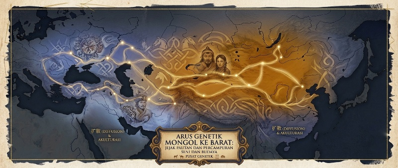
Namun narasi ini, seperti banyak legenda besar, ternyata lebih rumit ketika diuji ulang. Studi genom purba yang lebih baru terhadap makam-makam elite di Kazakhstan justru menemukan garis kromosom Y yang berbeda-beda pada individu-individu yang terkait dengan struktur kekuasaan Mongol, menantang gambaran satu garis keturunan tunggal yang menyebar rapi ke jutaan orang. Sejumlah ilmuwan kini menilai angka "16 juta keturunan" kemungkinan terlalu digeneralisasi, dan bahwa kromosom bersama itu sendiri kemungkinan sudah ada jauh sebelum lahirnya Temujin, menyebar melalui jalur dagang dan percampuran stepa selama berabad-abad—bukan semata hasil "keperkasaan biologis" satu orang.
But like many grand legends, this narrative turned out to be more complicated on closer examination. More recent ancient-genome studies of elite tombs in Kazakhstan instead found differing Y-chromosome lines among individuals tied to the Mongol power structure, challenging the tidy picture of a single lineage spreading neatly to millions. A number of scientists now believe the "16 million descendants" figure was likely over-generalized, and that the shared chromosome itself probably already existed well before Temüjin's birth, spreading through trade routes and steppe intermixing over centuries — not solely as the result of one man's "biological prowess."
Terlepas dari perdebatan ilmiah itu, riset lanjutan menemukan pola serupa pada sejumlah figur otoritas lain di Asia—termasuk garis keturunan yang dikaitkan dengan Giocangga, moyang pendiri Dinasti Qing—menunjukkan bahwa kombinasi kekuasaan politik dan struktur sosial hierarkis secara historis memang mampu meninggalkan jejak biologis berskala benua. Kisah Genghis Khan, dengan kata lain, barangkali bukan pengecualian ajaib, melainkan contoh paling dramatis dari pola yang lebih luas: kekuasaan, dalam bentuk paling purba, juga adalah kekuasaan reproduktif.
Setting that scientific debate aside, follow-up research has found similar patterns among several other authority figures in Asia — including a lineage linked to Giocangga, the founding ancestor of the Qing Dynasty — suggesting that the combination of political power and hierarchical social structure has historically been capable of leaving a continent-scale biological footprint. Genghis Khan's story, in other words, may not be a miraculous exception at all, but the most dramatic example of a much wider pattern: power, in its most primal form, is also reproductive power.
Ironisnya, hingga kini tidak ada satu pun jasad yang terkonfirmasi sebagai Genghis Khan sendiri untuk diuji secara langsung—makamnya yang disembunyikan di Burkhan Khaldun (lihat Bab 7) tetap menjadi salah satu misteri arkeologis terbesar dunia. Semua klaim genetik tentang dirinya, pada akhirnya, adalah inferensi tanpa bukti utama.
Ironically, to this day no remains have ever been confirmed as Genghis Khan's own for direct testing — his tomb, hidden at Burkhan Khaldun (see Chapter 7), remains one of the world's greatest archaeological mysteries. Every genetic claim about the man himself is, in the end, inference without primary evidence.
Dari Kürkän hingga Taj Mahal — Jejak Terakhir Darah Chinggisid di IndiaFrom Kürkän to the Taj Mahal — The Last Trace of Chinggisid Blood in India
Jika Timur (Bab 13) adalah simpul yang menyatukan kembali tiga dari empat pecahan kekaisaran Mongol untuk sesaat, maka jejak darah Chinggisid yang paling panjang umurnya justru lahir dari cabang keluarganya sendiri, jauh dari stepa asalnya—di anak benua India. Pada 1526, seorang pangeran pengembara bernama Babur, kelahiran Lembah Fergana (kini Uzbekistan), menyeberangi Sungai Indus dan mengalahkan Kesultanan Delhi dalam Pertempuran Panipat Pertama. Babur bukan sembarang penakluk: ia adalah keturunan Timur dari garis ayah, sekaligus keturunan Chagatai Khan—putra kedua Genghis Khan—dari garis ibu, generasi kelima dari Timur dan generasi ketiga belas dari Genghis Khan lewat jalur perempuan. Warisan ganda inilah yang kelak membuat dinasti yang ia dirikan dijuluki penduduk lokal dan para sejarawan sebagai "Moghul"—penanda asal-usul Mongol-Turkik mereka, meski dinasti itu sendiri lebih sering menyebut diri sebagai pewaris Timurid.
If Timur (Chapter 13) was the knot that briefly reunited three of the empire's four fragments, then the longest-lived trace of Chinggisid blood was born from his own family branch, far from the ancestral steppe — on the Indian subcontinent. In 1526, a wandering prince named Babur, born in the Fergana Valley (modern Uzbekistan), crossed the Indus River and defeated the Delhi Sultanate at the First Battle of Panipat. Babur was no ordinary conqueror: he descended from Timur through his father's line, and from Chagatai Khan — Genghis Khan's second son — through his mother's, the fifth generation from Timur and the thirteenth generation from Genghis Khan through the female line. This dual heritage is what led locals and historians alike to nickname the dynasty he founded "Mughal" — a marker of their Mongol-Turkic origin, though the dynasty itself more often called itself the Timurid heirs.
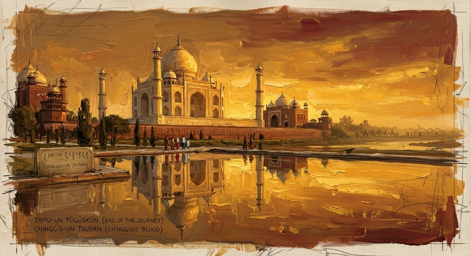
Dari fondasi yang diletakkan Babur, Imperium Moghul berkembang lewat lima generasi penguasa yang saling melengkapi: putranya Humayun harus merebut kembali takhta setelah sempat direbut penguasa Afghanistan; cucunya Akbar (memerintah 1556–1605), yang oleh banyak sejarawan dianggap penguasa terbesar dinasti ini, memperluas wilayah sekaligus melembagakan toleransi beragama radikal lewat kebijakan Din-i Ilahi—sinkretisme keagamaan yang menggemakan kembali toleransi Yassa milik leluhurnya delapan generasi sebelumnya (Bab 3). Cicit Akbar, Shah Jahan (1628–1658), mengukuhkan kejayaan artistik dinasti ini dengan membangun Taj Mahal sebagai monumen cinta bagi istrinya Mumtaz Mahal—mahakarya arsitektur yang memadukan tradisi Persia, Islam Asia Tengah, dan estetika India dalam simetri marmer sempurna, gaung jauh dari sintesis arsitektur Persia-Mongol-Cina yang lebih dulu lahir di Ilkhanate (Bab 12).
From the foundation Babur laid, the Mughal Empire grew across five generations of complementary rulers: his son Humayun had to reclaim the throne after briefly losing it to an Afghan ruler; his grandson Akbar (ruled 1556–1605), regarded by many historians as the dynasty's greatest ruler, expanded the territory while institutionalizing radical religious tolerance through the Din-i Ilahi policy — a religious syncretism echoing the Yassa's own tolerance from eight generations before (Chapter 3). Akbar's great-grandson, Shah Jahan (1628–1658), cemented the dynasty's artistic glory by building the Taj Mahal as a monument of love for his wife Mumtaz Mahal — an architectural masterpiece blending Persian, Central Asian Islamic, and Indian aesthetic traditions in perfect marble symmetry, a distant echo of the Persian-Mongol-Chinese architectural synthesis born earlier in the Ilkhanate (Chapter 12).
Kejayaan itu mulai retak di bawah Aurangzeb (1658–1707), penguasa terakhir dari lima kaisar besar Moghul, yang membalikkan kebijakan toleransi leluhurnya dengan menerapkan hukum keagamaan yang jauh lebih keras terhadap mayoritas Hindu—kebijakan yang, alih-alih memperkuat legitimasi seperti konversi Ghazan Khan di Ilkhanate (Bab 12), justru menyulut pemberontakan berkepanjangan dan mengikis kesetiaan rakyat. Setelah kematiannya, imperium yang pernah menguasai hampir seluruh anak benua India terpecah oleh perebutan takhta internal, kebangkitan kekuatan regional seperti Konfederasi Maratha, dan devaluasi ekonomi yang tak kunjung terkendali—pola kemunduran yang, jika dibaca berdampingan dengan Bab 8, Bab 9, dan Bab 12, terasa begitu familier: krisis suksesi, fragmentasi kekuasaan lokal, dan pelemahan fiskal yang sama-sama meruntuhkan setiap dinasti bertrah Chinggisid.
That glory began to crack under Aurangzeb (1658–1707), the last of the five great Mughal emperors, who reversed his ancestors' policy of tolerance by imposing far harsher religious law on the Hindu majority — a policy that, rather than strengthening legitimacy as Ghazan Khan's conversion had in the Ilkhanate (Chapter 12), instead sparked prolonged rebellion and eroded popular loyalty. After his death, an empire that had once ruled nearly the entire Indian subcontinent fractured under internal succession struggles, the rise of regional powers such as the Maratha Confederacy, and runaway economic devaluation — a pattern of decline that, read alongside Chapter 8, Chapter 9, and Chapter 12, feels remarkably familiar: succession crisis, local fragmentation of power, and fiscal weakening, the same forces that brought down every Chinggisid-blooded dynasty.
Kekosongan kekuasaan pascakemunduran Aurangzeb inilah yang secara perlahan diisi oleh kekuatan kolonial Eropa. Perusahaan Hindia Timur Britania, awalnya hadir sebagai mitra dagang, secara bertahap mengambil alih kendali politik dan militer sepanjang abad ke-18, hingga akhirnya Pemberontakan India 1857 memberi dalih bagi Britania untuk secara resmi mengasingkan kaisar Moghul terakhir, Bahadur Shah II, dan membubarkan dinasti yang telah bertahan 331 tahun. Dengan berakhirnya Moghul pada 1857, berakhir pula garis kekuasaan politik terakhir yang secara langsung dan dapat dilacak mengklaim darah Genghis Khan—enam setengah abad setelah Kurultai 1206 di hulu Sungai Onon (Bab 3), jejak Altan Urag (Bab 2) akhirnya benar-benar padam dari panggung kekuasaan dunia, meski warisan arsitektur, budaya, dan sintesis peradabannya tetap hidup di jantung India hingga hari ini.
It was this power vacuum after Aurangzeb's decline that European colonial power slowly filled. The British East India Company, initially present as a trading partner, gradually seized political and military control throughout the eighteenth century, until the 1857 Indian Rebellion finally gave Britain the pretext to formally exile the last Mughal emperor, Bahadur Shah II, and dissolve a dynasty that had endured for 331 years. With the Mughals' end in 1857, so ended the last political line of power directly and traceably claiming Genghis Khan's blood — six and a half centuries after the 1206 Kurultai at the headwaters of the Onon River (Chapter 3), the trace of the Altan Urag (Chapter 2) had at last truly gone dark from the world's stage of power, even as its architectural, cultural, and civilizational synthesis still lives at the heart of India today.
Ironisnya, penakluk yang mengakhiri garis Chinggisid terakhir di India—Britania—adalah kekuatan kolonial laut yang jauh lebih mengandalkan armada dan kapital ketimbang kavaleri stepa, sebuah pembalikan total dari kekuatan yang dulu membangun Altan Urag (Bab 2 dan Bab 5): jika Mongol menaklukkan dunia lewat kecepatan darat, penakluk terakhir garis keturunan mereka justru datang lewat laut—medan yang sejak Ekspedisi Singasari dan kegagalan invasi Jepang (Bab 7 dan Bab 11) telah terbukti menjadi batas alami kekuatan warisan stepa.
Ironically, the power that ended the last Chinggisid line in India — Britain — was a maritime colonial power relying far more on fleets and capital than steppe cavalry, a complete reversal of the force that once built the Altan Urag (Chapter 2 and Chapter 5): if the Mongols conquered the world through overland speed, the final conqueror of their bloodline instead came by sea — terrain that, since the Singhasari Expedition and the failed invasions of Japan (Chapter 7 and Chapter 11), had already proven the natural limit of the steppe legacy's power.
Historiografi dan Bayang Panjang Mongol di Dunia ModernHistoriography and the Long Shadow of the Mongols in the Modern World
Bagaimana sebuah peradaban diingat sering kali bergantung pada siapa yang menulis sejarahnya. Di Eropa abad pertengahan, Mongol dikenang sebagai momok apokaliptik—"murka Tuhan" yang meluluhlantakkan kota demi kota. Di Rusia era Soviet, warisan Horde disembunyikan sebagai aib nasional yang tak layak diakui. Di Cina, Dinasti Yuan diperlakukan sebagai interlude asing dalam narasi besar peradaban Han. Namun di Mongolia sendiri—dan dalam gelombang riwayat ulang yang dipelopori sejarawan seperti Jack Weatherford—Genghis Khan justru diangkat sebagai arsitek meritokrasi, toleransi beragama, dan jaringan pertukaran global pertama dalam sejarah manusia.
How a civilization is remembered often depends on who writes its history. In medieval Europe, the Mongols were remembered as an apocalyptic specter — the "wrath of God" that razed city after city. In Soviet-era Russia, the Horde's legacy was hidden away as a national shame unworthy of acknowledgment. In China, the Yuan Dynasty was treated as a foreign interlude in the grand narrative of Han civilization. Yet in Mongolia itself — and in a wave of historical reappraisal pioneered by historians such as Jack Weatherford — Genghis Khan is instead lifted up as the architect of meritocracy, religious tolerance, and the first global exchange network in human history.
Kebenaran, seperti biasa, berdiri di persimpangan kedua narasi itu. Imperium Mongol adalah mesin pembunuh massal sekaligus katalis globalisasi paling awal; penghancur perpustakaan sekaligus pendiri observatorium; penindas yang menghapus otonomi bangsa-bangsa taklukan sekaligus, secara tak sengaja, peletak fondasi negara-negara baru dari Moskow hingga Beijing. Warisan paradoks inilah yang membuat kronik Mongol tetap relevan diperbincangkan delapan abad kemudian—bukan sebagai dongeng kepahlawanan atau kutukan semata, melainkan sebagai cermin tentang bagaimana kekuasaan, sebesar apa pun, pada akhirnya selalu kembali menjadi debu stepa.
The truth, as always, stands at the crossroads of both narratives. The Mongol empire was a mass-killing machine and the earliest catalyst of globalization at once; a destroyer of libraries and the founder of observatories; an oppressor that erased the autonomy of conquered peoples while, quite unintentionally, laying the foundation for new states from Moscow to Beijing. It is this paradoxical legacy that keeps the Mongol chronicle worth discussing eight centuries later — not as a heroic fable or a mere curse, but as a mirror of how power, however vast, always eventually returns to steppe dust.